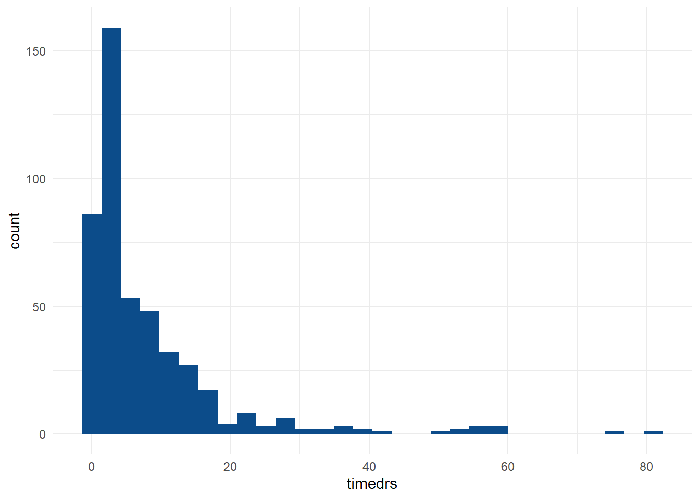
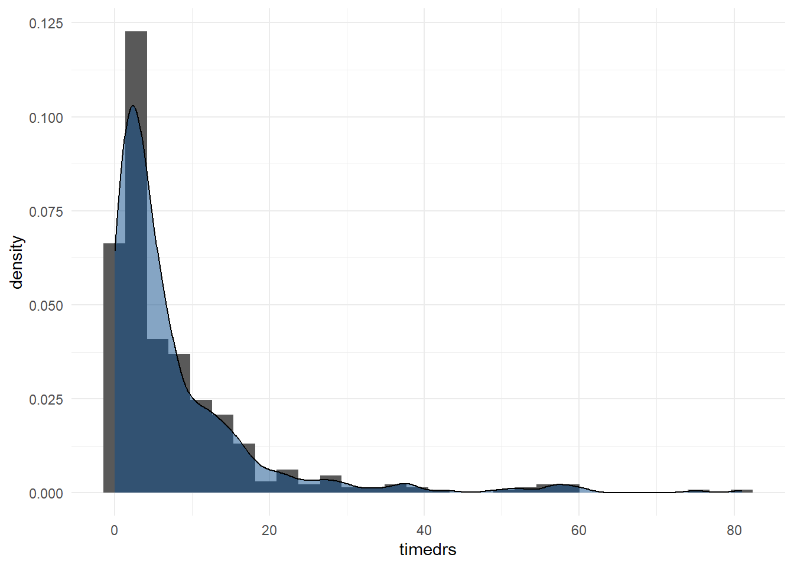
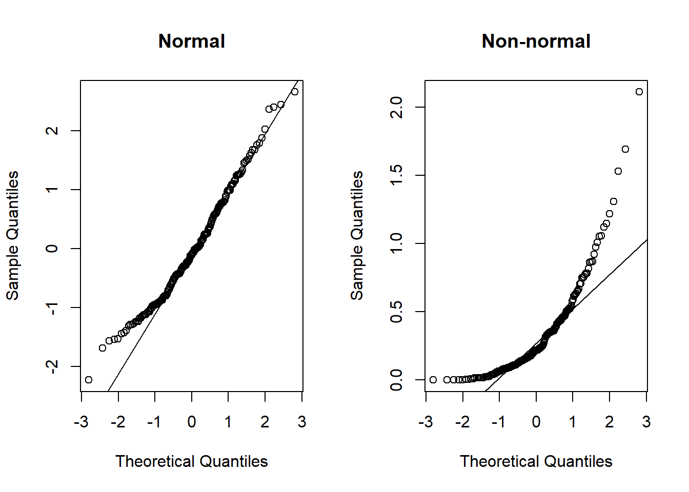
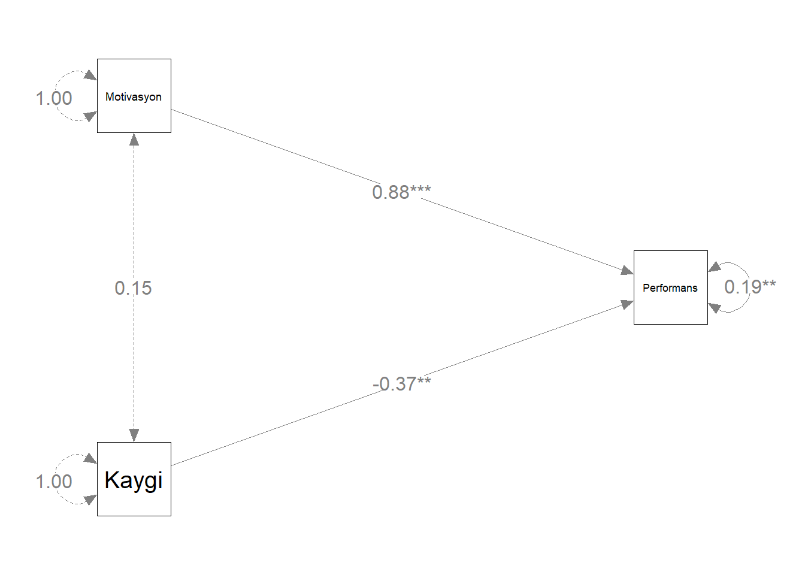
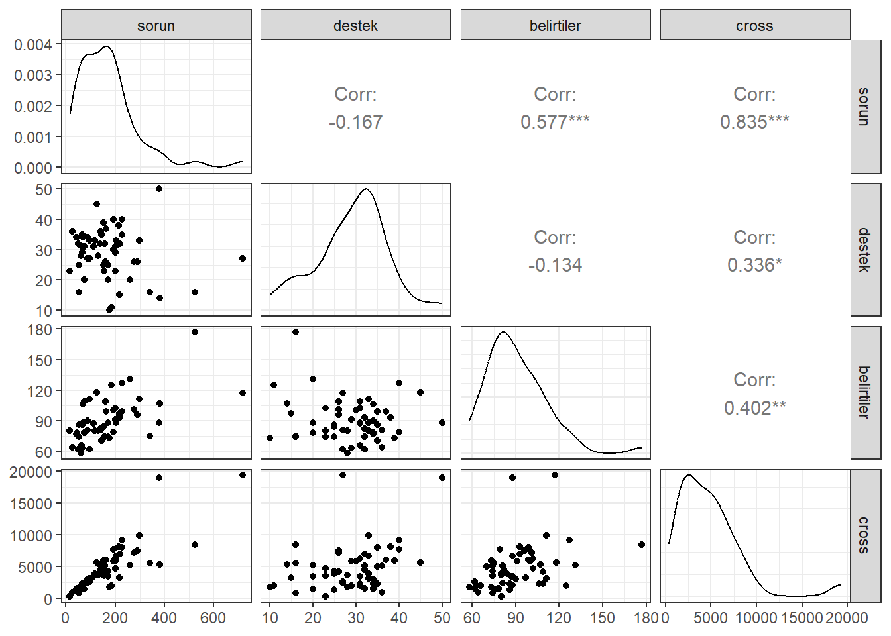

Ders Hakkında
Bu dersin amacı, R yazılımını kullanarak veri üzerinde istenilen çok değişkenli istatistiksel ve psikometrik işlemlerin yapılabilmesini sağlamaktır.
Tez ve makale çalışmalarında öğrencilerimizin analizlerini R yazılımı ile hiçbir paket programa ihtiyaç duymadan kendi başlarına yapmalarını sağlamaktır.
Ders İçeriği:
- Çok değişkenli İstatistik Varsayımları
- Çoklu Regresyon
- Yol Analizi
- Açımlayıcı Faktör Analizi
- Doğrulayıcı Faktör Analizi
- Progralamaya Giriş
- Klasik Test Kuramı
- Madde Tepki Kuramı
- Veri Üretimi
Kitaplar
Atar, B., Atalay Kabasakal, K, Unsal Ozberk, E. B., Ozberk, E. H. & Kibrislioglu Uysal, N. (2020). R ile Veri Analizi ve Psikometri Uygulamaları, Pegem Akademi, Ankara.🔗 📖
Desjardins, C. D., & Bulut, O. (2018). Handbook of educational measurement and psychometrics using R. Boca Raton, FL: CRC Press. 🔗📖
Demir, E. R Diliyle İstatistik Uygulamaları. Pegem Akademi, Ankara.(2021). 🔗📖
Kline,R. B. (2019). Yapısal Eşitlik Modellemesinin İlkeleri ve Uygulaması(4. Baskı). (S. Şen, Çev.) Ankara: Nobel Yayınevi.
Şen, S. (2020). Mplus ile Yapısal Eşitlik Modellemesi Uygulamaları (2020).Nobel Yayınevi.
Tabachnick, B. G., & Fidell, L. S. (2012). Using Multivariate Statistics (4rd ed.). New York: Harper Collins.
Wolf, E. J., Harrington, K. M., Clark, S. L., & Miller, M. W. (2013). Sample Size Requirements for Structural Equation Models: An Evaluation of Power, Bias, and Solution Propriety. Educational and Psychological Measurement, 73(6), 913–934. https://doi.org/10.1177/0013164413495237
1 Varsayımlar I
Veri Dosyasındaki Verinin Doğruluğu
Kayıp Verinin Miktarı ve Dağılımı
Tek Değişkenli ve Çok Değişkenli Uç Değerler (Outliers)
Sayıltılar
Çoklu Bağlantı (Multicollinearity) ve Tekillik (Singularity)
1.1 Veri İnceleme
Varsayımlar incelenirken ilk olarak yanlış girilmiş bir değer olup olmadığına bakılmalıdır.
Bu bölümde 🔗 SCREEN.SAV adlı veri seti kullanılmıştır. Bu veri setinde 20-59 yaşları arasında 465 kadının 6 değişkene ilişkin bilgileri bulunmaktadır. Değişkenlerden timedrs, attdrug, atthouse ve income değişkenleri sürekli, mstatus ve race değişkenleriyse iki kategorili değişkenlerdir. Bu veri seti Tabachnick, B. G., & Fidell, L. S. (2012). Using Multivariate Statistics (4rd ed.). New York: Harper Collins. kitabının 4. bölümünde kullanılmaktadır.
Veri incelemede birden fazla paket kullanılabilir. En temel fonksiyon
basepaketinsummary()fonksiyonudur.psychpaketindedescribe()fonksiyonu da aynı amaçla kullanılabilir.
| subno | timedrs | attdrug | atthouse | income | mstatus | race |
|---|---|---|---|---|---|---|
| 1 | 1 | 8 | 27 | 5 | 2 | 1 |
| 2 | 3 | 7 | 20 | 6 | 2 | 1 |
| 3 | 0 | 8 | 23 | 3 | 2 | 1 |
| 4 | 13 | 9 | 28 | 8 | 2 | 1 |
| 5 | 15 | 7 | 24 | 1 | 2 | 1 |
| 6 | 3 | 8 | 25 | 4 | 2 | 1 |
- Veri setindeki maksimum ve minumum değerleri belirlenmiştir.
## subno timedrs attdrug atthouse
## Min. : 1.0 Min. : 0.000 Min. : 5.000 Min. : 2.00
## 1st Qu.:137.0 1st Qu.: 2.000 1st Qu.: 7.000 1st Qu.:21.00
## Median :314.0 Median : 4.000 Median : 8.000 Median :24.00
## Mean :317.4 Mean : 7.901 Mean : 7.686 Mean :23.54
## 3rd Qu.:483.0 3rd Qu.:10.000 3rd Qu.: 9.000 3rd Qu.:27.00
## Max. :758.0 Max. :81.000 Max. :10.000 Max. :35.00
## NA's :1
## income mstatus race
## Min. : 1.00 Min. :1.000 Min. :1.000
## 1st Qu.: 2.50 1st Qu.:2.000 1st Qu.:1.000
## Median : 4.00 Median :2.000 Median :1.000
## Mean : 4.21 Mean :1.778 Mean :1.088
## 3rd Qu.: 6.00 3rd Qu.:2.000 3rd Qu.:1.000
## Max. :10.00 Max. :2.000 Max. :2.000
## NA's :26- Elde edilen değerlerin makul olduğu söylenebilir. Ancak bunu elde
etmek için başka yollar da bulunmaktadır.
psychpaketi ile inceleme daha ayrıntılı yapılabilir.
##
## Attaching package: 'psych'## The following objects are masked from 'package:ggplot2':
##
## %+%, alpha| vars | n | mean | sd | median | trimmed | mad | min | max | range | skew | kurtosis | se | |
|---|---|---|---|---|---|---|---|---|---|---|---|---|---|
| timedrs | 1 | 465 | 7.90 | 10.95 | 4 | 5.61 | 4.45 | 0 | 81 | 81 | 3.23 | 12.88 | 0.51 |
| attdrug | 2 | 465 | 7.69 | 1.16 | 8 | 7.71 | 1.48 | 5 | 10 | 5 | -0.12 | -0.47 | 0.05 |
| atthouse | 3 | 464 | 23.54 | 4.48 | 24 | 23.62 | 4.45 | 2 | 35 | 33 | -0.45 | 1.51 | 0.21 |
| income | 4 | 439 | 4.21 | 2.42 | 4 | 4.01 | 2.97 | 1 | 10 | 9 | 0.58 | -0.38 | 0.12 |
| mstatus | 5 | 465 | 1.78 | 0.42 | 2 | 1.85 | 0.00 | 1 | 2 | 1 | -1.34 | -0.21 | 0.02 |
| race | 6 | 465 | 1.09 | 0.28 | 1 | 1.00 | 0.00 | 1 | 2 | 1 | 2.90 | 6.40 | 0.01 |
🔗 personality-project sayfasını daha fazla örnek için inceleyebilirsiniz.
gtsummarypaketi ile inceleme
library(gtsummary)
screen %>% select(2:6) %>%tbl_summary(statistic = all_continuous() ~ c(
"{min}, {max}"),missing ="always")| Characteristic | N = 4651 |
|---|---|
| Visits to health professionals | 0, 81 |
| Â Â Â Â Unknown | 0 |
| Attitudes toward medication | |
| Â Â Â Â 5 | 13 (2.8%) |
| Â Â Â Â 6 | 60 (13%) |
| Â Â Â Â 7 | 126 (27%) |
| Â Â Â Â 8 | 149 (32%) |
| Â Â Â Â 9 | 95 (20%) |
| Â Â Â Â 10 | 22 (4.7%) |
| Â Â Â Â Unknown | 0 |
| Attitudes toward housework | 2.0, 35.0 |
| Â Â Â Â Unknown | 1 |
| Income | 1.00, 10.00 |
| Â Â Â Â Unknown | 26 |
| Whether currently married | |
| Â Â Â Â 1 | 103 (22%) |
| Â Â Â Â 2 | 362 (78%) |
| Â Â Â Â Unknown | 0 |
| 1 Range; n (%) | |
🔗[Presentation-Ready Summary Tables] with gtsummary(https://education.rstudio.com/blog/2020/07/gtsummary)
vtablepaketi ile inceleme
| Variable | NotNA | Min | Max |
|---|---|---|---|
| subno | 465 | 1 | 758 |
| timedrs | 465 | 0 | 81 |
| attdrug | 465 | 5 | 10 |
| atthouse | 464 | 2 | 35 |
| income | 439 | 1 | 10 |
| mstatus | 465 | 1 | 2 |
| race | 465 | 1 | 2 |
sütun isimleri aşağıdaki gibi değiştirilebilir.
sumtable(screen, summ = c('notNA(x)','min(x)','max(x)'),
summ.names = c('Frekans'
,'Minimum','Maksimum'))| Variable | Frekans | Minimum | Maksimum |
|---|---|---|---|
| subno | 465 | 1 | 758 |
| timedrs | 465 | 0 | 81 |
| attdrug | 465 | 5 | 10 |
| atthouse | 464 | 2 | 35 |
| income | 439 | 1 | 10 |
| mstatus | 465 | 1 | 2 |
| race | 465 | 1 | 2 |
kablepaketi ilepsychpaketi çıktılarını düzenleme
ozet <- describe(screen[,-1])
kable(ozet,format='markdown',
caption="Betimsel İstatistikler",digits=2)| vars | n | mean | sd | median | trimmed | mad | min | max | range | skew | kurtosis | se | |
|---|---|---|---|---|---|---|---|---|---|---|---|---|---|
| timedrs | 1 | 465 | 7.90 | 10.95 | 4 | 5.61 | 4.45 | 0 | 81 | 81 | 3.23 | 12.88 | 0.51 |
| attdrug | 2 | 465 | 7.69 | 1.16 | 8 | 7.71 | 1.48 | 5 | 10 | 5 | -0.12 | -0.47 | 0.05 |
| atthouse | 3 | 464 | 23.54 | 4.48 | 24 | 23.62 | 4.45 | 2 | 35 | 33 | -0.45 | 1.51 | 0.21 |
| income | 4 | 439 | 4.21 | 2.42 | 4 | 4.01 | 2.97 | 1 | 10 | 9 | 0.58 | -0.38 | 0.12 |
| mstatus | 5 | 465 | 1.78 | 0.42 | 2 | 1.85 | 0.00 | 1 | 2 | 1 | -1.34 | -0.21 | 0.02 |
| race | 6 | 465 | 1.09 | 0.28 | 1 | 1.00 | 0.00 | 1 | 2 | 1 | 2.90 | 6.40 | 0.01 |
- 🔗 rmarkdown-cookbook
1.2 Kayıp Değerler
Kayıp veri, veri analizindeki en yaygın problemlerden biridir.
Kayıp verinin önemi kayıp verinin miktarına, örüntüsüne ve neden eksik olduğuna bağlıdır.
Bir değişkene ait beklenmeyen miktarda kayıp veri varsa, ilk olarak bunun nedeni araştırılmalıdır. Daha sonra kayıp verinin örüntüsüne bakılarak, rastlantısal mı yoksa sistematik bir örüntü mü gösterdiği belirlenmelidir.
- Örneğin, 30 yaşın üstündeki birçok kadın yaş ile ilgili soruyu cevaplamak istemezler.
Genellikle kayıp verinin örüntüsü miktarından daha önemlidir. Rastlantısal dağılmayan kayıp veriler sonuçların genellenebilirliğini etkileyeceğinden miktarları az da olsa, rastlantısal dağılan kayıp verilere oranla daha ciddi problemlere yol açarlar.
1.3 Kayıp Veri Türleri
Kayıp veri türleri arasındaki ayrım 1976 yılında Rubin tarafından yapılmıştır. Rubin (1976) kayıp veriyi aşağıdaki şekilde sınıflandırmıştır.
Tamamen Rastgele Olarak Kayıp (TRK) - Missing Completely at Random MCAR
Rastgele Kayıp (RK) - Missing at Random (MAR)
Rastgele Olmayan Kayıp / İhmal Edilemez Kayıp (ROK) - Not Missing at Random (NMAR)
Kayıp veri en azından MAR türünde değilse, kayıp verinin ihmal edilemeyeceği söylenir. Bu türdeki kayıp veri rastlantısal olamyan kayıp veya ihmal edilemez kayıp olarak adlandırılır.
Büyük bir veri setinde, verinin %5’i veya daha azı rastlantısal olarak kayıpsa çok ciddi problemlerle karşılaşılmaz ve kayıp veri ile ilgili problemleri çözmek için kullanılan herhangi bir yöntem benzer sonuçlar verir. Halbuki küçük veya orta büyüklükteki bir veri setinde çok sayıda veri kaybı varsa ciddi problemler ortaya çıkabilir.
Eldeki bilgiden yararlanarak kayıp verideki örüntüler test edilebilir.
1.3.1 TRK
Bir Y değişkeninde kayıp veri bulunma olasılığının, Y değişkeninin kendi değerleriyle ve veri setindeki diğer değişkenlerin değerleriyle ilişkisiz olması durumunda Y değişkenindeki verinin tamamen rastgele kayıp (TRK) olduğu söylenir (Allison, 2002).
Örneğin; bir ilkokulda okuma başarısı üzerine yürütülen bir boylamsal araştırmada çocuklar hastalık ya da ailede ölüm gibi tesadüfi bir sebepten değerlendirmeye katılmadığında veri TRK olarak adlandırılır. Ayrıca bu faktörlerin sosyoekonomik düzey gibi ölçülen diğer değişkenle ilişkisi olmadığı varsayıldığında, araştırmacı tarafından elde edilen veriler hipotetik bir tam veri setinin rastgele bir örneklemini temsil eder (Peugh ve Enders, 2004).
1.3.2 Rastgele kayıp (RK)
Bir Y değişkenindeki kayıp veri bulunma olasılığının, analiz modelindeki diğer değişkenlerin bazılarıyla ilişkili olduğunu ancak Y değişkeninin kendi değerleriyle ilişkili olmadığını ifade eder.
Örneğin, kanser hastalarıyla yaşam kalitesi üzerine çalışma yapan bir psikologun yaşlı ve eğitim düzeyi düşük hastaların yaşam kalitesi anketini reddetme eğiliminin daha yüksek olduğu sonucuna ulaştığını düşünelim. Bu durumda kayıp veriye eğilimin, kayıp veri bulunan değişkenle arasında artık ilişki yoksa verinin RK olduğu söylenir. Başka bir ifadeyle, RK yaş ve eğitim kontrol edildiğinde kayıp veri olasılığının yaşam kalitesiyle arasında ilişki olmaması durumudur (Enders, 2010). Kayıp veri olasılığı yalnızca diğer gözlenen değişkenlerin değerlerine bağlı olduğunda veri RK’dır (Robitzsch ve Rupp, 2009).
RK türünde veri gerçekte rastlantısal olarak kayıp değildir, veri kaybı veri setindeki değişkenlerden bazılarına bağlıdır. Rastlantısal olarak kayıp değerler ve gözlenen değerler arasında sistematik farklılıkların olabileceği ancak bu farklılıkların diğer gözlenen değişkenlerle tamamen açıklanabileceği anlamındadır.
Bir değişkenin gözlemleri rastlantısal olarak kayıpsa, şartlı değişkenler kontrol edilebilirse , rastlantısal küme elde edilebilir; kayıp ve gözlenen değerler kontrol altına alınan gruplarda benzer dağılımlara sahip olacaklardır.
Örneğin, kayıp verinin bulunduğu değişkene göre eksik değerlere sahip bireyler ve tam değerlere sahip bireylerden iki grup oluşturulabilir. Sonra analizde bu değişkenle ilgili olabilecek diğer değişkenlerde t testi ile iki grup arasındaki ortalama farklara bakılabilir.
1.3.3 Rastgele Olmayan Kayıp
- Rastgele olmayan kayıp (ROK), bir Y değişkenindeki kayıp veri bulunma olasılığının diğer değişkenler kontrol edildiğinde bile Y değişkeninin değerleriyle ilişkili olması durumunda meydana gelir. Örneğin, okuma becerileri zayıf olan öğrencilerin okuma testinde anlama güçlüğü çekerek soruları atlaması kaçınılmaz olacaktır. Bu durumda okuma değerlendirmesi okuma başarısıyla doğrudan ilişkilidir (Enders, 2010; Peugh ve Enders, 2004).
1.4 Kayıp Veri Atama Yöntemleri
Kayıp veriyle baş etme yöntemleri
veri silmeye dayalı yöntemler (liste bazında - çiftler bazında)
Veri atamaya dayalı yöntemler
Model tabanlı yöntemler
Veri silmeye dayalı yöntemler TRK veri mekanizmasını gerektirmektedir ve bu varsayım sağlanmadığında yanlış parametre kestirimleri verebilir. MCAR varsayımı sağlandığında bile verinin silinmesi analizin gücünün düşmesine neden olabilmektedir (Enders, 2010).
1.4.1 Veri Silmeye Dayalı Yöntemler
| Gözlem | Y1 | Y2 | Y3 |
|---|---|---|---|
| 1 | 13 | 23 | 21 |
| 2 | 14 | 22 | 17 |
| 3 | 15 | - | 11 |
| 4 | 16 | 18 | - |
| 5 | 17 | 17 | 12 |
| 6 | - | 20 | 8 |
| 7 | - | 20 | 15 |
Liste bazında veri silme yöntemi uygulandığında veri kümesinde sadece birinci, ikinci ve beşinci gözlemler üzerinden istatistiksel çözümlemeler yapılacaktır. Üçüncü, dördüncü, altıncı ve yedinci gözlemler kayıp veri bulundurduklarından çözümleme dışında bırakılmıştır.
çiftler bazında veri silme ile ele alındığında birinci ve ikinci değişken için birinci, ikinci, dördüncü ve beşinci gözlemler üzerinden işlem yapılacaktır. Birinci ve üçüncü değişken için yapılacak kestirimler, birinci, ikinci, üçüncü ve beşinci gözlemler üzerinden yapılacaktır. İkinci ve üçüncü değişkenler baz alındığında ise üçüncü ve dördüncü gözlem hariç diğer gözlemler üzerinden çözümlemeler yapılacaktır. Yapılan işlemler dikkate alındığında ilk altküme için dört gözlem çifti, ikinci altküme için dört gözlem çifti ve üçüncü altküme için beş gözlem çifti üzerinden çözümlemeler yapılarak birleştirilecektir. Görüldüğü gibi altkümelerin gözlem sayıları birbirlerinden farklı olabilmektedir. Liste bazında veri silme yönteminde gözlenmesine rağmen çözümleme dışında kalan değerlerden oluşan bilgi kaybı, çiftler bazında veri silme yöntemi ile azaltılmıştır. Her değişkenin farklı örneklem sayısı bulundurmasının ANOVA ve regresyon çözümlemesi gibi yöntemlerin kullanılacağı durumlarda problemli olduğunu belirtilmiştir.
1.4.2 Veri atamaya dayalı yöntemler
- Ortalama veri atama
- Regresyon İle veri atama
- Deck/Deste ile Veri Yükleme
- En Yakın Komşu Yöntemi
- Son Gözlemi İleri Taşıma
1.4.2.1 Ortalama veri atama
Bu yöntemde mevcut veriden ilgili degiskenlere ait ortalamalar hesaplanır ve analize baslamadan önce kayıp deger yerine ortalama deger koyulur.
Örnegin, income degiskeni için ortalama deger 4 ise, gelirini belirtmeyen birey için gelir 4 olarak kabul edilir.
Diger bütün bilgilerin eksikliginde, ortalama, bir degiskenin degeri hakkındaki en iyi tahmindir. Ancak ortalama deger ortalamaya kayıp degerden daha yakın olacagından degiskenin varyansı daralır, degiskenin diger degiskenlerle korelasyonu da daralır. Varyans daralmasının derecesi kayıp verinin miktarına ve kayıp olan gerçek degere baglıdır.
Bir alternatif kayıp deger yerine grup ortalaması yerlestirmektir. Bu yaklasım, yerine ortalama yerlestirme yönteminden daha iyi sonuç saglar. Kayıp degerler için atıflar daha yerindedir ve varyans çok fazla daralmamıs olur. Ancak grupiçi varyansın daralması gruplar arasında çok büyük farklılıklara neden olabilir.
1.4.2.2 Regresyon Kullanılması
Bu yöntemde kayıp veriye sahip degisken bagımlı degisken, diger degiskenlerse bagımsız degiskenler olarak ele alınarak bir regresyon esitligi yazılır. Tam veriye sahip bireyler regresyon esitliginin üretilmesinde kullanılır. Daha sonra esitlik kayıp degerleri tahmin etmek için kullanılır.
Bu yöntemle tahmin edilen deger olasılıkla ortalama degere daha yakın olacagından varyans daralması olabilir.
Veri setinde iyi bagımsız degiskenlerin bulunması gerekir. Eger veri setindeki degiskenler kayıp veriye sahip degiskenin iyi birer yordayıcısı degillerse regresyon tahminini yerlestirmek ortalamayı yerlestirmek gibidir.
Bu yöntemle tahmin edilen deger degiskenin alabilecegi olası deger aralıgındaysa kullanılır, aksi halde kullanılmamalıdır.
1.4.3 Model tabanlı yöntemler
Gözlenmiş değerler üzerinden kurulan bir modelde olabilirlik ve sonsal dağılımlara bağlı olarak parametrelerin kestirilmesine dayanan kayıp veri yöntemleridir. Bu yöntemlerin en önemli getirisi esneklikleridir. Geçici yöntemlerden kaçınarak model varsayımları altında çözümleme yaparlar. Ayrıca veri matrisinde gözlenememiş değerleri de hesaba katarak varyans kestirimleri verirler.
ML Yöntemi
EM Algoritması
Çoklu Veri Atama
1.4.3.1 Beklenti Maksimizasyonu:
Bu yöntem iki adımdan olusan iteratif bir yöntemdir – beklenti (expectation (E) ve maksimizasyon (maximization (M)).
Ilk olarak, E adımında gözlenen degerlerden ve korelasyon gibi tahmin edilen parametrelerden kayıp verinin beklentisi bulunur. Bu beklentiler kayıp veri yerine yerlestirilir.
Sonra, M adımında kayıp veri doldurulmus gibi maksimum olabilirlik tahmini gerçeklestirilir.
Daha sonra,eger yakınsanma basarılırsa, EM varyans/kovaryans matrisi elde edilebilir veya doldurulan veri, veri setinde kaydedilebilir.
Bu yöntemde EM veri seti veri setine hata eklenmedigi için yanlıdır. Böylece bu veri setine dayalı analizlerde hipotez testleri için uygun olmayan standart hatalar elde edilebilir.
1.4.3.2 Çoklu Atıf
Bu yöntemde ilk olarak lojistik regresyon kullanılır; belli bir degiskende kayıp veriye sahip ve sahip olmayan gözlemler iki kategorili bagımlı degiskeni olusturur, bagımsız degiskenler olarak ele alınacak diger degiskenler belirlenir ve bir regresyon esitligi yazılır.
Sonra tam veriye sahip gözlemlerden rastlantısal bir örneklem seçilir ve bu örneklem kayıp veriye sahip degiskenin dagılımının belirlenmesinde kullanılır.
Daha sonra kayıp veriye sahip degiskenin dagılımından m tane rastlantısal örneklem seçilir ve m tane veri seti için degiskene ait kestirimlerde bulunulur. Çogu durumda bes hatta üç örneklem yeterli olacaktır.
Istatistiksel analiz m veri seti için ayrı ayrı uygulanır ve ortalama parametre kestirimi rapor edilir.
Bu yöntemin bir avantajı kayıp verinin rastlantısal olduguyla ilgili bir varsayımda bulunmamasıdır.
1.4.4 Kayıp Veri Analizinde Kullanılan Paketler
- Kayıp veriyi incelemek ve kayıp veri ile baş etmek konusunda birden
fazla paket mevcuttur. Bu paketler arasında
- VIM
- missMethods
- Amelia
- naniar paketi sayılabilir.
İlk örnekler naniar üzerinden gösterilmektedir.
- herhangi bir eksik veri olup olmadığının kontrolü
## [1] TRUE- toplam kaç eksik veri var
## [1] 27- eksik veri oranı ne?
## [1] 0.008294931- eksik veriler hangi sütunlarda
## subno timedrs attdrug atthouse income mstatus race
## 0 0 0 1 26 0 0- eksik veri tablosu, frekans ve oran
| variable | n_miss | pct_miss |
|---|---|---|
| income | 26 | 5.5913978 |
| atthouse | 1 | 0.2150538 |
| subno | 0 | 0.0000000 |
| timedrs | 0 | 0.0000000 |
| attdrug | 0 | 0.0000000 |
| mstatus | 0 | 0.0000000 |
| race | 0 | 0.0000000 |
- değişkenlere göre eksik veri tablosu
| n_miss_in_var | n_vars | pct_vars |
|---|---|---|
| 0 | 5 | 71.42857 |
| 1 | 1 | 14.28571 |
| 26 | 1 | 14.28571 |
- Hangi bireylerde/satırlarda eksik veri var
| case | n_miss | pct_miss |
|---|---|---|
| 52 | 1 | 14.28571 |
| 64 | 1 | 14.28571 |
| 69 | 1 | 14.28571 |
| 77 | 1 | 14.28571 |
| 118 | 1 | 14.28571 |
| 135 | 1 | 14.28571 |
- tam ve eksik veri tablosu
| n_miss_in_case | n_cases | pct_cases |
|---|---|---|
| 0 | 438 | 94.193548 |
| 1 | 27 | 5.806452 |
- Eksik verinin görselleştirilmesi

- Eksik verinin görselleştirilmesi

## `geom_line()`: Each group consists of only one observation.
## ℹ Do you need to adjust the group aesthetic?
1.4.5 Kayıp Veri Testi
Veri kaybının diğer değişkenlerle ilişkili olup olmadığının incelenmesi
finalfit paketi ile gerçekleştirilebilir.
- income değişleninde eksik veriler diğer değişkenlerle ilişkili mi?
# değişkeni kopyala
screen2 <- screen
screen2$income_m <- screen2$income
library(finalfit)
explanatory = c("timedrs", "attdrug", "atthouse")
dependent = "income_m"
screen2 %>%
missing_compare(dependent, explanatory) %>%
knitr::kable(row.names=FALSE, align = c("l", "l", "r", "r", "r"),
caption = "Eksik veriye sahip olan ve olmayan değişkenlerin ortalama karşılaştırması") | Missing data analysis: Income | Not missing | Missing | p | |
|---|---|---|---|---|
| Visits to health professionals | Mean (SD) | 7.9 (11.1) | 7.6 (7.4) | 0.891 |
| Attitudes toward medication | Mean (SD) | 7.7 (1.2) | 7.9 (1.0) | 0.368 |
| Attitudes toward housework | Mean (SD) | 23.5 (4.5) | 23.7 (4.2) | 0.860 |
1.4.5.1 Bir değişkenin kategorilerinde inceleme
library(tidyverse)
miss_test <- screen2 %>%mutate(miss_income = is.na(income))
# evli olmayanlar için
notmarried <- miss_test %>% filter(mstatus == 1) %>%
pull(miss_income)
# Evliler için
married <- miss_test %>% filter(mstatus == 2) %>% pull(miss_income)
#c Oran
t.test(notmarried, married)##
## Welch Two Sample t-test
##
## data: notmarried and married
## t = -0.95833, df = 198.7, p-value = 0.3391
## alternative hypothesis: true difference in means is not equal to 0
## 95 percent confidence interval:
## -0.06708191 0.02320485
## sample estimates:
## mean of x mean of y
## 0.03883495 0.06077348
1.4.6 MCAR test
| statistic | df | p.value | missing.patterns |
|---|---|---|---|
| 3.286262 | 6 | 0.7721547 | 3 |
- Littleın MCAR testine ilişkin p değerinin . 773 olduğu görülmektedir. Böylece kayıp verinin MCAR olduğu sonucuna varılabilir.
1.4.7 Kayıp veri ile başetme
- Liste bazında silme işlemi na.omit ve complete.cases fonkisyonları ile sağlanabilir.
- Ortalama atama işlemi yapılabir. Tek bir değişkene ortalama atama
- if_else() ile ortalama atama işlemi yapılabir.
screen3 <- screen
screen3 = transform(screen3, income = ifelse(is.na(income),
mean(income, na.rm=TRUE), income))
summary(screen3$income)## Min. 1st Qu. Median Mean 3rd Qu. Max.
## 1.00 3.00 4.00 4.21 6.00 10.00mutate()ile ortalama atama işlemi yapılabilir
1.4.8 Veri setindeki kayıp veriler
atthouse değişkeninde bir kayıp değer bulunmaktadır ve liste bazında silme yöntemi ile veri setinden çıkarılmıştır.
Veri setinde income değişkeni 26 kayıp değere sahiptir ve bu sayı örneklemin %5’inden fazladır. Eğer bu değişken araştırma açısından öneme sahip değilse, veri setinden çıkarılabilir, aksi halde kayıp verinin tahmin edilmesi yöntemlerinden biri kullanılabilir.
income değişkenindeki kayıp değerler için kayıp verinin tahmin edilmesi yöntemlerinden ortalamanın yerleştirilmesi kullanılarak kayıp değer yerine değişkenin ortalama değeri (4.21 değeri) yerleştirilmiştir.
screen <- screen %>%
mutate(income = ifelse(is.na(income), mean(income, na.rm =TRUE),
income)) %>% na.omit()
summary(screen)## subno timedrs attdrug atthouse
## Min. : 1.0 Min. : 0.000 Min. : 5.00 Min. : 2.00
## 1st Qu.:136.8 1st Qu.: 2.000 1st Qu.: 7.00 1st Qu.:21.00
## Median :313.5 Median : 4.000 Median : 8.00 Median :24.00
## Mean :317.3 Mean : 7.914 Mean : 7.69 Mean :23.54
## 3rd Qu.:483.2 3rd Qu.:10.000 3rd Qu.: 9.00 3rd Qu.:27.00
## Max. :758.0 Max. :81.000 Max. :10.00 Max. :35.00
## income mstatus race
## Min. : 1.000 Min. :1.00 Min. :1.000
## 1st Qu.: 3.000 1st Qu.:2.00 1st Qu.:1.000
## Median : 4.000 Median :2.00 Median :1.000
## Mean : 4.208 Mean :1.78 Mean :1.086
## 3rd Qu.: 6.000 3rd Qu.:2.00 3rd Qu.:1.000
## Max. :10.000 Max. :2.00 Max. :2.0001.5 Daha Fazlası için
1.6 ODEV
- Dealing With Missing Data in R ilk üç bölümü
- Handling Missing Data with Imputations in R ilk bölümü
- Introduction to Statistics in R ilk bölümü
1.7 Kaynaklar
Allison, P. D. (2003). Missing Data Techniques for Structural Equation Modeling. Journal of Abnormal Psychology. 112(4), 545-557.
Peugh, J.L. & Enders, J.K. (2004). Missing Data in Educational Research: A Review of Reporting Practices and Suggestions for İmprovement. Review of EducationalResearch, 74(4), 525-556, DOI: 10.3102/00346543074004525 Peugh ve Enders, 2004
Rubin, D. B. (1976). Inference with missing data. Biometrika , 63, 581
- Robitzsch ve Rupp, 2009
2 Varsayımlar II
2.1 Uç değerler
Uç değerler hem I. tip hem de II. tip hatalara neden olurlar ve sonuçların genellenebilirliğini düşürürler.
Veri setinde uç değer bulunmasının 4 nedeni olabilir
- Verinin veri dosyasına yanlış girilmesi
- Kayıp veri kodlamasında hata yapılması
- Uç değerin örneklemin alındığı evrenin üyesi olmaması
- Uç değerin örneklemin alındığı evrenin üyesi olması ancak değişkenin evrendeki dağılımının normal dağılıma göre aşırı değerlere sahip olması
Hatalı veri girişi ve kayıp değer kodlaması kolaylıkla bulunup düzeltilebilir ancak 3. ve 4. durumlar arasında ayrım yapıp uç değerin veri setinden silinip silinmemesine karar vermek oldukça güçtür.
Tek değişkenli uç değerlerin belirlenmesi çok değişkenli uç değerlerin belirlenmesine göre daha kolaydır.
İki kategorili değişkenler için, eşit büyüklükte olmayan kategorilerde yanlış kategoride gözlenen bir değer olasılıkla uç değerdir. Rummel (1970) iki kategorili bir değişken için kategorilerden biri örneklemdeki bireylerin %90’ını diğeri ise %10’unu içeriyorsa, değişkenin analiz dışı bırakılmasını önermektedir.
2.1.1 İki kategorili değişkenlerde uç değerlerin belirlenmesi
summarytools paketinde
freq()fonksiyonu ile frekans tabloları oluşturulabilir.Veri setinde yer alan mstatus ve race değişkenlerinin frekans tabloları incelenmiştir.
İlk olarak eksik veri düzenlenmesi yapılmıştır.
library(haven)
library(dplyr)
screen <- read_sav("import/SCREEN.sav")
screen <- screen %>%
mutate(income = ifelse(is.na(income), mean(income, na.rm =TRUE),
income)) %>% na.omit()- race değişkenin frekans tablosu
## ### Frequencies
## #### screen$race
## **Label:** Ethnic group membership
## **Type:** Numeric
##
## | | Freq | % | % Cum. |
## |----------:|-----:|-------:|-------:|
## | **1** | 424 | 91.38 | 91.38 |
## | **2** | 40 | 8.62 | 100.00 |
## | **Total** | 464 | 100.00 | 100.00 |İki kategorili değişkenlerden race değişkeninin kategorilere dağılımları incelendiğinde kategoriler arasında yaklaşık 10.1:1 (91/9) oranı olduğu görülmektedir. Bu oran oldukça yüksektir. Değişken araştırma için önemli değilse çıkarılabilir, aksi halde değişkenle ilgili sonuçlar yorumlanırken bu durum göz önüne alınmalıdır.
mstatus değişkenin frekans tablosu oluşturulurup
kable()fonksiyonu ile tablolaştırılmıştır.
library(knitr)
freq(screen$mstatus,report.nas = FALSE) %>%
kable(format='markdown',
caption="Frekans Tablosu",digits = 2)| Freq | % Valid | % Valid Cum. | % Total | % Total Cum. | |
|---|---|---|---|---|---|
| 1 | 102 | 21.98 | 21.98 | 21.98 | 21.98 |
| 2 | 362 | 78.02 | 100.00 | 78.02 | 100.00 |
| 0 | NA | NA | 0.00 | 100.00 | |
| Total | 464 | 100.00 | 100.00 | 100.00 | 100.00 |
İki kategorili değişkenlerden mstatus değişkeninin kategorilere dağılımları incelendiğinde kategoriler arasında yaklaşık 3.5:1 (78/22) oranı olduğu görülmektedir. Bu oran kabul edilebilir bir orandır.
2.1.2 Sürekli değişkenlerde uç değerlerin belirlenmesi
Sürekli değişkenler için tek değişkenli uç değerleri belirlemenin bir yolu, değişkene ait bütün değerlerin ortalama 0, standart sapma 1 olacak şekilde standart değerlere (z puanlarına) dönüştürülmesidir. Tek değişkenli uç değerler çok büyük z puanlarına sahiptirler.
Örneklem büyüklüğü 100 veya daha az olduğunda, eğer herhangi bir gözlemin z puanı ±3.0 veya daha fazlaysa, gözlem uç değerdir.
Örneklem büyüklüğü 100’den fazla olduğunda, eğer herhangi bir gözlemin z puanı ±4.0 veya daha fazlaysa, gözlem uç değerdir.
Bu yöntem eşit aralık veya eşit oran düzeyinde ölçülen değişkenler için veya sürekli değişken olarak ele alınan sıralama ölçeğinde ölçülen değişkenler için geçerli olup sınıflama düzeyinde ölçülen değişkenler için geçerli değildir.
outliers paketinde
select()fonksiyonu ile z değerleri hesaplanabilir.
library(outliers)
z.scores <- screen %>%
select(2:5) %>%
scores(type = "z") %>%
round(2)
head(z.scores)| timedrs | attdrug | atthouse | income |
|---|---|---|---|
| -0.63 | 0.27 | 0.77 | 0.34 |
| -0.45 | -0.60 | -0.79 | 0.76 |
| -0.72 | 0.27 | -0.12 | -0.51 |
| 0.46 | 1.13 | 0.99 | 1.61 |
| 0.65 | -0.60 | 0.10 | -1.36 |
| -0.45 | 0.27 | 0.33 | -0.09 |
- summarytools paketinde
descr()fonksiyonu ile z değerlerinin minumum ve maksimum değerleri incelenebilir.
summarytools::descr(z.scores,
stats = c("min", "max"),
transpose = TRUE,
headings = FALSE) %>%
kable()| Min | Max | |
|---|---|---|
| attdrug | -2.33 | 2.00 |
| atthouse | -4.80 | 2.56 |
| income | -1.36 | 2.46 |
| timedrs | -0.72 | 6.67 |
- timedrs değişkeni için z puanlarının maksimum değerin 4.0’ten büyük olduğu, atthouse değişkeni z puanlarının içinse minimum değerin 4.0’ten küçük olduğu görülmektedir. Diğer değişkenler için değerler beklenen sınırlar içerisindedir.
Tek değişkenli uç değerleri saptamak için grafiksel yöntemlerden de yararlanılabilir (Örneğin, histogramlar, kutu grafikleri, normal olasılık grafikleri gibi).
Histogramlar kolay anlaşılan ve yorumlanan grafiklerdir ve uç değerlerin belirlenmesine yardımcı olabilirler. Genellikle ortalamanın yakınındaki çoğu gözlemle birlikte ortalamanın iki yönüne doğru uzanan gözlemler vardır. Uç değer dağılımın geri kalanıyla bağlantısı bulunmayan gözlemdir.
Kutu grafikleri de basittir. Medyan etrafındaki gözlemler kutu içine alınır. Kutudan çok uzağa düşen gözlemler uç değerdir.
Normal olasılık grafikleri değişkenlerin dağılımlarının normalliğinin değerlendirilmesinde oldukça kullanışlıdır. Uç değerler de bu grafiklerde gözlenebilir; diğerlerinden önemli derecede uzakta bulunan nokta uçdeğerdir.
2.1.3 timedrs değişkenin incelenmesi
2.1.3.1 histogram
library(ggplot2)
ggplot(screen, aes(x = timedrs)) +
geom_histogram(bins = 30L, fill = "#0c4c8a") +
theme_minimal()
- grafik üzerinde ortalamanın gösterilmesi
library(ggpmisc)
ggplot(screen, aes(x = timedrs)) + geom_histogram() +
geom_vline(xintercept =7.914, color = "red",
linetype = "dashed") +
annotate("text", label = "Ort = 7.913", x = 10, y = 100, color ="black")
2.1.3.2 yoğunluk grafiği
ggplot(screen, aes(x = timedrs)) +
geom_histogram(aes(y=..density..))+
geom_density(alpha=.5, fill="#0c4c8a") +
theme_minimal()
2.1.3.3 interaktif grafik
2.1.3.4 kutu grafik

- boxplot.stats fonksiyonun out bileşini uç değerleri vermektedir.
## [1] 60 23 39 33 38 34 27 30 25 49 60 27 27 52 24 57 52 58 57 43 37 75 29 30 25
## [26] 37 56 29 37 81 27 23- Bu uç değerlerin timedrs değişkeninde hangi gözlemlerde olduğu ise aşağıdaki kodlarla belirlenebilir.
## [1] 40 64 67 76 79 96 102 117 150 163 168 170 178 193 203 206 213 249 274
## [20] 278 285 289 309 342 344 362 367 374 388 404 408 443- interaktif kutu grafiği
- interaktif kutu grafiği üzerine uç değerlerin idlerinin işaretlenmesi ise aşağıdaki kodla yapılabilir.

2.1.4 attdrug değişkenin incelenmesi

2.1.5 atthouse değişkenin incelenmesi
2.1.5.1 histogram
ggplot(screen) +
aes(x = atthouse) +
geom_histogram( bins = 10, fill = "darkgreen") +
theme_minimal()
2.1.5.2 kutu grafiği
🔗Color codes

Veri setinde potansiyel tek değişkenli uç değerler tespit edildiğinde, önce uç değerin nedeni araştırılmalıdır. Eğer veri girişinde hata varsa veya kayıp veri kodlanırken hata yapıldıysa düzeltilmelidir.
Bunun dışındaki nedenlerde değişkenin dönüştürülmesinin uygun olup olmayacağına karar verilmelidir.
Dönüşümler hem dağılımların normalliğini geliştirir hem de tek değişkenli uç değerleri dağılımın merkezine çekerler ve etkisini azaltırlar.
Dönüşüme karar verilirse çok değişkenli uç değerler incelenmeden dönüşüm yapılmalıdır. Çünkü çok değişkenli uç değerlerin belirlenmesinde kullanılan istatistikler normal dağılımı gerektirir.
2.1.6 Uç değerlerin Belirlenmesi
Veri setinde iki değişken – timedrs ve atthouse uç değerlere sahiptir.
timedrs değişkeni için uç değer olarak belirlenen değerlerin beklenen değerlerin üstünde olduğu ancak veri girişinde hata bulunmadığı rapor edilmiş, bu değerlere sahip bireylerin veri setinde kalmasına karar verilmiştir.
atthouse değişkeni için uç değerler olarak belirlenen değerler diğer değerlerden kopuktur. Bu değerlerin evren için beklenen değerler mi olduğuna veya veri girişinde hata yapılıp yapılmadığına karar verilmelidir.
Her iki durumda da veri setinde 260. ve 296. satırda yer alan 2 birey (346 ve 407 subno.lu bireyler) veri setinden çıkarılabilir. 2 bireyin veri setinden çıkarılması sonucu örneklem büyüklüğü 462’ye eşit olacaktır.
| subno | timedrs | attdrug | atthouse | income | mstatus | race |
|---|---|---|---|---|---|---|
| 346 | 2 | 8 | 2 | 1 | 1 | 1 |
| 407 | 2 | 8 | 2 | 4 | 1 | 1 |
2.1.7 Mahalanobis Uzaklığı
Çok değişkenli uç değerleri belirlemenin bir yolu Mahalanobis uzaklığını hesaplamaktır. Mahalanobis uzaklığı z puanının çok boyutlu versiyonudur. Bir gözlemin, dağılımın kovaryansı (çok boyutlu varyansı) verildiğinde, dağılımın ağırlık merkezinden (çok boyutlu ortalamasından) uzaklığını ölçer.
Mahalonobis uzaklığı ki-kare dağılımı gösterir (serbestlik derecesi hesaplamada kullanılan değişken sayısına eşittir) ve ki-kare dağılımı kullanılarak değerlendirilebilir. Eğer hesaplanan Mahalonobis uzaklığının gözlenme olasılığı 0.001 veya daha küçükse gözlem uçdeğerdir.
Bu yöntem eşit aralık veya eşit oran düzeyinde ölçülen değişkenler için veya sürekli değişken olarak ele alınan sıralama ölçeğinde ölçülen değişkenler için geçerli olup sınıflama düzeyinde ölçülen değişkenler için geçerli değildir.
Mahalanobis uzaklığı hesaplama
library(psych)
veri <- screen[,1:5]
md <- mahalanobis(veri, center = colMeans(veri), cov = cov(veri))
head(md,20)## [1] 3.785517 4.541493 3.501077 7.281365 5.457240 2.896550 5.807898
## [8] 3.879478 4.751166 7.415405 10.602100 5.249121 6.073732 3.271885
## [15] 12.316463 4.440749 4.836160 6.362806 4.126524 10.797545- Mahalanobis uzaklığı kritik değer belirleme
## [1] 20.51501- Mahalonobis uzaklığı değerleri ki-kare ile değerlendirilir (serbestlik derecesi bağımsız değişken sayısına eşittir). Buna göre 20.51501 kritik değerinden büyük olan değerler 0.001 alfa düzeyinde istatistiksel olarak anlamlı olarak değerlendirilir.
| subno | timedrs | attdrug | atthouse | income |
|---|---|---|---|---|
| 48 | 60 | 7 | 24 | 1 |
| 235 | 60 | 10 | 29 | 4 |
| 276 | 57 | 9 | 24 | 2 |
| 291 | 52 | 8 | 19 | 1 |
| 330 | 58 | 7 | 29 | 4 |
| 370 | 57 | 8 | 23 | 4 |
| 398 | 75 | 9 | 33 | 9 |
| 502 | 56 | 8 | 19 | 3 |
| 548 | 81 | 8 | 24 | 9 |
- 548, 398, 48, 235, 330, 502, 276, 291 ve 370 subno.lu bireyler için Mahalonobis uzaklık değerleri kritik değerden büyüktür. Bu gözlemler çok değişkenli uç değerler olarak değerlendirilir.
| subno | timedrs | attdrug | atthouse | income |
|---|---|---|---|---|
| 48 | 60 | 7 | 24 | 1 |
| 235 | 60 | 10 | 29 | 4 |
| 276 | 57 | 9 | 24 | 2 |
| 291 | 52 | 8 | 19 | 1 |
| 330 | 58 | 7 | 29 | 4 |
| 370 | 57 | 8 | 23 | 4 |
| 398 | 75 | 9 | 33 | 9 |
| 502 | 56 | 8 | 19 | 3 |
| 548 | 81 | 8 | 24 | 9 |
2.2 Çok Değişkenli Normallik Sayıltısı
Çok degiskenli normallik sayıltısını test etmek için doğrudan bir test bulunmadığından, genellikle her bir değişken ayrı ayrı test edilir ve eğer her bir değişken normal dağılım gösteriyorsa çok değişkenli normal oldukları varsayılır.
- Not: Her bir değişkenin normal olarak dağılım çok değişkenli normallik için gereklidir ancak yeterli degildir.
Normalliğin değerlendirilmesi için hem istatistiksel hem de grafiksel yöntemler vardır.
Istatistiksel yöntemler normallik için hipotez testlerini içerir.
Grafiksel yöntemler histogram ve normallik grafiklerinin incelenmelerini içerir.
Çok değişkenli normallik her bir değişkenin ve degiskenlerin bütün doğrusal kombinasyonlarının normal dağıldığı sayıltısıdır.
Sayıltının karşılanması durumunda analizin artıkları (hataları) da normal dağılır.
Çok değişkenli normallik sayıltısı farklı çok değişkenli istatistikler için farklı ele alınır.
2.2.0.1 Normallik Sayıltısı
Normalliğin iki bileşeni vardır: Çarpıklık ve basıklık
Bir değişkene ait dağılım normal olduğunda, değişkenin çarpıklık ve basıklık değerleri sıfıra eşittir.
Kural olarak eğer değişkenin çarpıklık ve basıklık değerleri -1.0 ile +1.0 arasındaysa, değişkenin normale oldukça yakın olduğu söylenebilir.
Hem çarpıklık hem de basıklık için istatistiksel anlamlılık testleri vardır. Bu testlerde z dağılımı kullanılarak elde edilen çarpıklık veya basıklık değeri sıfır ile karşılaştırılır:
## [1] 3.226868## [1] 0.1135929## [1] 28.4073## [1] 28.4073jarque.testfonksiyonu veri normal dağılımdan farklılaşmamaktır yokluk hipotezini test etmektedir.
##
## Jarque-Bera Normality Test
##
## data: remove_labels(timedrs)
## JB = 3984.7, p-value < 2.2e-16
## alternative hypothesis: greater##
## Jarque-Bera Normality Test
##
## data: remove_labels(attdrug)
## JB = 5.1381, p-value = 0.07661
## alternative hypothesis: greater##
## Jarque-Bera Normality Test
##
## data: remove_labels(atthouse)
## JB = 1.5155, p-value = 0.4687
## alternative hypothesis: greaterpar(mfrow=c(1,2))
hist(normal, col='steelblue', main='Normal')
hist(non_normal, col='steelblue', main='Non-normal')
par(mfrow=c(1,2))
qqnorm(normal, main='Normal')
qqline(normal)
qqnorm(non_normal, main='Non-normal')
qqline(non_normal)

2.3 Doğrusallık
Doğrusallık iki değişken arasında doğrusal bir iliskinin oldugu sayıltısıdır.
İki değişken arasındaki doğrusallık iki değişkenli saçılım grafik incelenerek değerlendirilebilir.
Gruplanmamış veride bütün bireyler analize katılırken, gruplanmamış veride analiz her bir grup içinde ayrı ayrı yapılır.
Eğer iki değişken de normal dağılıyorsa ve doğrusal olarak ilişkiliyse, saçılım grafiği oval şeklindedir.
Eğer değişkenlerden bir normal dağılmıyorsa, saçılım grafik oval şeklinde olmayacaktır.
Eğer veri setinde çok sayıda değişken varsa, olası bütün değişken çiftlerini incelemek yerine doğrusallıktan uzaklaşabilecek değişken çiftleri incelenebilir
2.4 Varyansların homojenliği
Varyansların homojenliği (homoscedasticity), bağımlı değişken(ler)in bağımsız değişken(ler)in aralığı boyunca aynı düzeyde varyansa sahip olduğu sayıltısıdır.
Çoğu durumda, bağımsız değişkenin her bir değerinde bağımlı değişkenin çok farklı değerleri bulunur. Bu ilişkinin ele alınabilmesi için bağımlı değişkenin değerlerinin varyansı, bağımsız değişkenin her değerinde oldukça eşit olmalıdır.
Varyansların homojenliği normallik sayıltısı ile ilişkilidir. Çok değişkenli normallik sayıltısı karşılandığında, değişkenler arasındaki ilişkiler homojendir.
Varyansların heterojenliği, gruplanmış veri için çok önemli degildir. İki değişkenli saçılım grafik incelenerek degerlendirilebilir. Değişkenler arasındaki varyans farklılıkları tahmin edilebiliyorsa saçılım grafikte bu farklılıklar gözlenebilir. Grafikte açıklanamayan farklılıklar varsa analizi zayıflar ve geçerliği düşer.
Varyansların heterojenligi gruplanmış veride daha önemlidir. Varyans homojenligini test etmek için Box’s M test kullanılabilir.
Varyansların heterojenliği değişkenlerden birinin normal dağılım göstermemesinden veya bağımsız değişkendeki hatalı ölçümlerden kaynaklanabilir.

2.4.1 Veri Dönüştürme
Normallik ve varyansların homojenliği sayıltıları ihlal edildiği zaman veri dönüştürme düşünülebilir. Ancak veri dönüştürüldüğü zaman yorumlanmasının da güçleşebileceği göz önünde bulundurulmalıdır.
Veri dönüştürmede değişkenlerin normallikten ne kadar uzaklaştıkları önemlidir.
Eğer dağılım normalden orta derecede farklılık gösteriyorsa, ilk olarak karekök dönüştürme denenir.
Eğer dağılım normalden önemli derecede farklılık gösteriyorsa, log dönüştürme denenir.
Eğer dağılım normalden ciddi derecede farklılık gösteriyorsa, ters dönüştürme denenir.
Veri dönüştürmede değişkenlerin normallikten ne yönde uzaklaştıkları önemlidir.
Eğer sola çarpıklık varsa, değişkenin yansıtılması ve yansıtılma sonucu sağa çarpık şekle dönüşen dağılım üzerinden dönüştürme işlemlerinin yapılması önerilir.
Değişkeni yansıtmak için önce dağılımdaki en yüksek değer bulunur ve bu değere 1 eklenerek sabit bir değer elde edilir. Sonra dağılımdaki her bir değer sabit değerden çıkarılarak yeni bir değişken elde edilir. Böylece dönüştürme işleminden önce sola çarpık dağılım sağa çarpık dağılıma dönüştürülmüş olur.
Veri dönüştürme işlemlerinden sonra sayıltılar tekrar kontrol edilmelidir.
| Dağılım | Dönüşüm |
|---|---|
| Orta düzeyde pozitif çarpık | Karekök |
| Yüksek düzeyde pozitif çarpık | Logaritma |
| Aşırı düzeyde pozitif çarpık | Ters Çevirme |
| Orta düzeyde negatif çarpık | Yansıtma ve karakök |
| Yüksek düzeyde negatif çarpık | Yansıtma ve logaritma |
| Aşırı düzeyde negatif çarpık | Yansıtma ve ters çevirme |
- timedrs değişkeni üzerinde yapılan dönüşüm
| vars | n | mean | sd | median | trimmed | mad | min | max | range | skew | kurtosis | se | |
|---|---|---|---|---|---|---|---|---|---|---|---|---|---|
| X1 | 1 | 462 | 7.939394 | 10.97367 | 4 | 5.635135 | 4.4478 | 0 | 81 | 81 | 3.216397 | 12.79007 | 0.5105414 |
| vars | n | mean | sd | median | trimmed | mad | min | max | range | skew | kurtosis | se | |
|---|---|---|---|---|---|---|---|---|---|---|---|---|---|
| X1 | 1 | 462 | 1.710822 | 0.9579993 | 1.609438 | 1.696916 | 0.7573501 | 0 | 4.406719 | 4.406719 | 0.21646 | -0.2085275 | 0.0445702 |
2.5 Çoklu Bağlantı ve Tekillik
(Çoklu) bağlantı ve tekillik bağımsız değişkenler arasındaki korelasyon çok yüksek olduğunda ortaya çıkan problemlerdir.
(Çoklu) bağlantıda değişkenler arasındaki korelasyon çok yüksektir.
Tekillikte değişkenler fazlalıktır; değişkenlerden biri analizdeki iki veya daha fazla değişkenin bileşimidir.
Değişkenler (çoklu) bağlantılıysa veya tekilse, gereksiz bilgi içerirler ve analizde bu değişkenlerin hepsine ihtiyaç yoktur. Bu değişkenlerin hepsinin modele yer alması modeldeki hataları artırır ve analizi zayıflatır.
Bağlantı problemini belirlemek için bağımsız değişkenler arasındaki iki değişkenli korelasyon katsayılarını içeren korelasyon matrisi incelenebilir.
Örneğin, iki değişken arasındaki korelasyon katsayısının 0.90 veya 0.90’dan daha yüksek olması bağlantı problemine işarettir.
| timedrs | attdrug | atthouse | income | |
|---|---|---|---|---|
| timedrs | 1.00 | 0.10 | 0.12 | 0.05 |
| attdrug | 0.10 | 1.00 | 0.03 | 0.00 |
| atthouse | 0.12 | 0.03 | 1.00 | -0.02 |
| income | 0.05 | 0.00 | -0.02 | 1.00 |

Not: Yüksek korelasyon değerlerinin bulunmaması, bağlantı probleminin olmadığı anlamına gelmez. Bağlantı ilgili bağımsız değişken dışındaki diğer bağımsız değişkenlerden iki veya daha fazlasının bir aradaki etkisinden kaynaklanabilir ki bu durumda çoklu bağlantı söz konusudur.
Çoklu bağlantının değerlendirilmesi için her bir bağımsız değişkenin diğer bağımsız değişkenler tarafından ne ölçüde açıklandığının tespit edilmesi gerekir.
Çoklu bağlantının belirlenmesinde her bir değişken için SMC (squared multiple correlation, \(R^2\)) değeri incelenebilir. \(R^2\) değeri regresyon modelinde belli bir bağımsız değişkenin gözlenen varyansının diğer bütün bağımsız değişkenler tarafından açıklanan miktarıdır.
\(R^2\) değeri bağımsız değişkenlerden birinin (Örneğin, X1) bağımlı değişken, diğer bağımsız değişkenlerinse bağımsız değişken (Örneğin, X2, X3 gibi) olarak ele alındığı bir regresyon modeli kurularak hesaplanır.
\(R^2\) değeri yüksekse, değişken diğer değişkenlerle oldukça ilişkilidir ve yüksek değerler çoklu bağlantıya işarettir.
\(R^2\) değeri 1’e eşitse, değişken diğer değişkenlerle mükemmel derecede ilişkilidir ve bu değer tekilliğe işarettir.
Çoklu bağlantının belirlenmesinde her bir değişken için tolerans (tolerance) ( \(1- R^2\)) değeri incelenebilir. Bu değer belli bir bağımsız değişkenin gözlenen varyansının modeldeki diğer bağımsız değişkenler tarafından açıklanmayan miktarıdır.
Örneğin, X1 değişkeninin gözlenen varyansının yaklaşık %25’i modeldeki diğer bağımsız değişkenler tarafından açıklanırsa ( \(R^2\) = 0.25), X1 değişkeninin tolerans değeri yaklaşık 0.75’tir ( \(1- R^2\)= 1-0.25 = 0.75).
Tolerans değerinin yüksek olması gerekir. Daha düşük tolerans değerleri, daha yüksek derecede çoklu bağlantı anlamına gelir. Tolerans değeri için önerilen kesme değeri 0.10’dur. Bu değer bir bağımsız değişken ve diğer bağımsız değişkenler arasında 0.95 değerinde bir çoklu korelasyona karşılık gelmektedir.
Çoklu bağlantının belirlenmesinde her bir değişken için VIF değeri incelenebilir. VIF değeri tolerance değerinin tersi alınarak hesaplanır.( \(1/(1- R^2)\))
Örneğin X1 değişkenin tolerans değeri yaklaşık 0.75 ise VIF değeri 1.33 olacaktır. VIF değerinin karekoku çoklu bağlantıdan kaynaklı standart hatanın artma derecesini yansıtır.
VIF değerinin kesme değeri 10'dur. Dolayısla standart hatalar hiç çoklu bağlantı bulunmayan duruma oranla üç kattan daha fazla artacaktır.
model <- lm(subno ~ timedrs + attdrug + atthouse +income + race+ mstatus ,
data = screen)
library(olsrr)
ols_vif_tol(model) %>% kable(digit=2)| Variables | Tolerance | VIF |
|---|---|---|
| timedrs | 0.97 | 1.03 |
| attdrug | 0.99 | 1.01 |
| atthouse | 0.98 | 1.03 |
| income | 0.77 | 1.30 |
| race | 0.99 | 1.01 |
| mstatus | 0.77 | 1.29 |
Çoklu bağlantı problemi belirlenirse,
Birinci seçenek çoklu bağlantıya neden olan değişkenlerden en az birisinin analizden çıkarılmasıdır.
İkinci seçenek çoklu bağlantıya neden olan değişkenlere ait değerlerin toplanması veya ortalamasının alınmasıdır.
Üçüncü seçenek temel bileşenlerin hesaplanıp analizlerde temel bileşenlerin kullanılmasıdır.
2.6 Kaynaklar
Rummel, R. J. (1970). Applied Factor Analyis. Evanston,IL: Northwestern University Press.
3 Regresyon
Bilindiği üzere, t-testi, varyans analizi gibi ortalama farkları ile ilgili hipotez testleri değişkenler arasındaki ilişkiye dair herhangi bir bilgi vermemektedir.
Oysa serpilme diyagramlarına bakıldığında değişkenler arasında bir ilişki olabileceği hissedilebilmekte fakat bu tür analizlerle bu ilişkiler ortaya koyulamamaktadır.
Dolayısıyla değişkenler arasındaki ilişkinin şeklini, yönünü ve kuvvetini belirleyebilmemiz için yeni metotlara ihtiyaç vardır. Bu metotlar ise genel olarak regresyon (eğri uydurma) ve korelasyon analizi olarak adlandırılır.
3.1 Regresyon Kullanım Alanları
Tarımda belli ürünlerin verimi etkileyen toprak türü, tohum, sulama v.b. faktörlerin saptanması ve bunlar yardımıyla belli şartlarda alınacak ürün miktarının kestirilmesi tarımın önemli konusudur.
Bir değişkenin değerlerinin ilgili başka değişkenler yardımıyla kestirilmesi, günlük yaşamımızın, ticaretin ekonominin, doğa ve sosyal bilimlerin önemli konularını içendedir.
günlük yaşamımızın, ticaretin ekonominin, doğa ve sosyal bilimlerin pek çok alanındaki çalışmalarda iki ya da daha çok değişken arasında fonksiyonel ilişkiler vardır. Bu ilişkiler matematiksel bir denklem yazılabilir.
Örneğin taksi hizmeti ödenen \(ücret = a + bx\)
a: sabit (taksimetre açılış ücreti)
b: her kilometrede artan ücret
3.2 Regresyon Kullanım Alanları
Regresyon çözümlemenin temel amacı; bağımlı değişken ile bağımsız değişken(ler) arasındaki ilişkiyi matematiksel modelle açıklayarak bağlantılar bulmak ve bağımsız değişken(ler) yardımıyla bağımlı değişkenli kestirmek şeklinde özetlenebilir.
Sosyal bilimlerde değişkenler arasındaki ilişkiler bir dereceye kadar fonksiyoneldir. (taksimetre örneği kadar net değildir!) Bu ilişkiye probabilisitik ilişki denir.
Sosyal bilimlerde değişkenler arasındaki ilişkilerin matematiksel olarak kesin ifadelerle yazılamaması, bu değişkenlere ait önceki bilgiler yardımıyla elde edilmesi ve matematiksel ifadelerin bu bilgilere dayanılarak yazılması yolunu açmıştır.
Regresyon terimi 19. yüzyılda İngiliz istatistikçisi Francis Galton tarafından bir biyolojik inceleme için ortaya atılmıştır. Bu incelemenin ana konusu kalıtım olup, aile içinde baba ve annenin boyu ile çocukların boyu arasındaki bağlantıyı araştırmakta ve çocukların boylarının bir nesil içinde eski ata nesillerinin ortalamasına geri döndüklerini yani bir nesil içinde ortalamaya geri dönüş olduğu inceleme konusudur.
3.3 Basit Doğrusal Regresyon
- Bir bağımsız \(X\) değişkeninin değerlerinden ona bağlı değişkeninin değerlerinin kestirilmesini sağlayan denkleme \(Y\)’in \(X\)’e göre regresyonu denir.
\[Y= bx + a\] - Regresyon denkleminde \(b\) doğrunun eğimidir – \(X\)’in 1 puanlık değişimine karşılık Y’nin ne kadar değişeceğini belirtir. (buna regresyon katsayısı denir)
\(a\) ise \(Y\)-kesişim noktasıdır – \(X\) sıfıra eşit olduğunda \(Y\)’nin alacağı değerdir (buna regresyon sabiti denir)
Lise matematik puanlarından yararlanarak üniversite genel matematik puanlarını kestirme amacıyla üniversite genel matematik dersini alan öğrencilerden uygun bir örneklem alınmıştır.
lise_not <- c(18,35,53,24,64,58,32,39,64,82,32,49,48,70,57)
uni_not <- c(33,46,47,21,73,55,74,32,56,68,43,46,68,84,61)
veri <- data.frame(lise_not, uni_not)- Regresyon analizi yapmadan önce saçılım diagramı incelenmelidir. Puanlar saçılım grafiğinde tek bir doğru oluşturmamaktadır. Ancak doğru oluşturma eğilimleri vardır.
ggplot2::ggplot(veri, aes(x = lise_not, y = uni_not)) +
geom_point() +
geom_smooth(method = "lm", se = F)
- Noktalardan olabildiğince yakın geçecek bir doğru çizilebilirse bu doğrudan yararlanarak \(X\) puanı bilinen öğrencilerin \(Y\) puanları kestirilebilir.
##
## Call:
## lm(formula = uni_not ~ lise_not, data = veri)
##
## Residuals:
## Min 1Q Median 3Q Max
## -16.475 -8.349 -0.449 5.037 31.158
##
## Coefficients:
## Estimate Std. Error t value Pr(>|t|)
## (Intercept) 21.373 10.196 2.10 0.0562 .
## lise_not 0.671 0.198 3.38 0.0049 **
## ---
## Signif. codes: 0 '***' 0.001 '**' 0.01 '*' 0.05 '.' 0.1 ' ' 1
##
## Residual standard error: 13.4 on 13 degrees of freedom
## Multiple R-squared: 0.468, Adjusted R-squared: 0.427
## F-statistic: 11.4 on 1 and 13 DF, p-value: 0.00493.4 En küçük kareler yöntemi
Bu yönteme göre a ve b öyle bir belirlenmelidir ki dağılımdaki noktaların, doğrunun etrafındaki değişkenliği en aza indirgenmiş olmalıdır.
Regresyon doğrusu, noktalar ile regresyon doğrusu arasındaki sapmaların kareler toplamı en az olacak şekilde, saçılım grafiğindeki noktalar kümesine en uygun yere çizildiğinden bu ölçüte en küçük kareler ölçütü adı verilir.

\(Y\) değeri ve regresyon doğrusundaki \(Y′\) arasındaki farkın en küçük olacak şekilde yerleştirilir.
\(\sum(Y-Y′)^2\) en küçük olacak şekilde yerleştirir.
\(b_{yx}=\frac{n\sum{XY}-\sum{X}\sum{Y}}{n\sum{X^2}-(\sum{X})^2}\)
\(a_{yx}=\frac{n\sum{Y}-b_{YX}\sum{X}}{n}\)
\(b_{yx}\) hesaplama
\(b_{YX}=\frac{n\sum{XY}-\sum{X}\sum{Y}}{n\sum{X^2}-(\sum{X})^2}\)
n <- length(lise_not)
byx = (n*sum(lise_not*uni_not)-sum(lise_not)*sum(uni_not))/
(n*sum(lise_not^2) - sum(lise_not)^2)
byx## [1] 0.671- Regresyon doğrusunun eğimi, değişkenlerin standart sapmalarının oranlarıyla bunlar arasındaki korelasyonun çarpımına eşittir.
## [1] 0.671\(a_{yx}\) hesaplama
\(a_{yx}=\frac{n\sum{Y}-b_{yx}\sum{X}}{n}\)
## [1] 21.43.5 Kestirimin Standart Hatası
Kestirim sonunda \(Y\) değişkeninin gözlenen değerleri ile regresyon değerleri \(Y'\) arasında fark olmaması veya bu farkın olabildiği kadar küçük olması istenir.
Gözlenen \(Y\) ve kestirilen \(Y'\) değerleri arasındaki farklar kestirimdeki hatalardır. Bu farkların karelerinin ortalamasının kare köküne kestirimin standart hatası adı verilir.
\[S_{yx}=\sqrt{\sum{\frac{(Y-Y')^2}{n-2}}}\]
\[S_{yx}=\sqrt{\frac{\sum{Y^2}-a\sum{Y}-b\sum{XY}}{n-2}}\]
Ortak dağılımın için kestirimin standart hatası tek değişkenli dağılımın standart sapmasına benzer.
Standart sapma tek değişkenli dağılımın ortalamadan farkının standart bir ölçüsü olduğu gibi, kestirimin standart hatası da noktaların standart regresyon çizgisinden farkının ölçüsüdür.
Bu nedenle kestirimin standart hatası verilen X değeri için kestirilen Y değerinin standart sapması şeklinde okunabilen \(S_{yx}\) sembolü ile gösterilir.
\(X\) değerlerinden kestirilen \(Y'\) ’lerin standart hatası
## [1] 13.4## [1] 13.43.5.1 Basit Doğrusal Regresyon Uygulama
| r.squared | adj.r.squared | sigma | statistic | p.value | df | logLik | AIC | BIC | deviance | df.residual | nobs |
|---|---|---|---|---|---|---|---|---|---|---|---|
| 0.468 | 0.427 | 13.4 | 11.4 | 0.005 | 1 | -59.2 | 124 | 127 | 2350 | 13 | 15 |
\(R\) İki değişken arasında pearson korelasyon katsayısı
\(R-Square:\) Determinasyon katsayısı/bağımsız değişkenin bağımlı değişken üzerindeki açıklama oranı
\(\text{Adjusted R Square:}\) Düzeltmiş determinasyon katsayısı, şans eseri açıklanan değişimin neden olduğu hatanın arındırılmış hali.
\(\text{Standart Kestirimin Hatası:}\) Hata teriminin standart sapmasıdır.
Tablodaki \(p\) değeri regresyon modelindeki yordanan ve yordayan değişkenler arasındaki ilişki için hesaplanan değerin anlamlı olup olmadığını göstermektedir.
| r.squared | adj.r.squared | statistic | df | p.value |
|---|---|---|---|---|
| 0.468 | 0.427 | 11.4 | 1 | 0.005 |
Yani regresyon modelinde lise matematik puanları ile genel matematik puanları arasında doğrusal ilişki anlamlı düzeydedir. Regresyon modelindeki \(\text{df}\) 1 olması nedeni, regresyon modelindeki sabit ve eğimi katsayı olarak almasıdır. 2-1
\(p\) değerleri sabitin ve yordayıcı değişkenin katsayısının anlamlılık testi sonuçları
| term | estimate | std.error | statistic | p.value |
|---|---|---|---|---|
| (Intercept) | 21.373 | 10.196 | 2.10 | 0.056 |
| lise_not | 0.671 | 0.198 | 3.38 | 0.005 |
4 Çoklu Regresyon
Çok değişkenli analiz, bir çalışmadaki bireylerden veya nesnelerden elde edilen çoklu ölçümlerin aynı anda analizidir. Dolayısıyla ikiden fazla değişkenin aynı anda analizi çok değişkenli analiz olarak düşünülebilir.
Çoklu regresyon, basit regresyonun tek bir bağımlı değişkenin iki veya daha fazla yordayıcısına izin veren uzantısıdır. Diğer bir ifadeyle, çoklu regresyon tek bir bağımlı değişken ile iki veya daha fazla bağımsız (yordayıcı) değişken arasındaki ilişkinin analiz edilmesi için kullanılan istatistiksel bir yöntemdir.
Çoklu regresyonun amacı değerleri bilinen bağımsız değişkenleri kullanarak bağımlı değişkenin değerini yordamaktır.
Regresyon yöntemiyle bağımsız değişkenlerden en fazla yordamayı sağlamak üzere her bağımsız değişken ağırlıklandırılır.
Ağırlıklar bağımsız değişkenin yordamaya bağıl katkısını ifade eder ve her bir değişkenin yordamadaki etkisine ilişkin yorumlamayı kolaylaştırır.
Çoklu regresyon, hem bağımlı değişken hem de bağımsız değişkenler en az eşit aralıklı ölçek düzeyinde ölçüldüğünde kullanılmalıdır.
Ancak bağımsız değişkenler sınıflama veya sıralama ölçeğinde ölçüldüğünde ilgili değişkenler belli koşullar altında analize dahil edilebilir.
Çoklu regresyon her bir bağımsız değişkendeki değişikliklerin bağımlı değişkendeki değişikliklerle ne ölçüde ilişkili olduğunu kestirir.
Ancak bağımsız değişkenler arasındaki korelasyon yordama sürecini zorlaştırır.
4.1 Bağımsız değişkenler arasındaki ilişki
ceteris paribus
Örneğin, \(X_1\) ve \(Y\) arasındaki korelasyon katsayısı 0.40, \(X_2\) ve \(Y\) arasındaki korelasyon katsayısı 0.60, \(X_1\) ve \(X_2\) arasındaki korelasyon katsayısı sıfır ise, \(Y\)’nin varyansının iki değişken tarafından açıklanan toplam oranı iki değişkenin \(Y\) ile korelasyonlarının kareleri toplamından elde edilebilir:
\(0.40^2 + 0.50^2 = 0.16 + 0.25 = 0.41\)

Ancak, uygulamada çoğunlukla \(X_1\) ve \(X_2\) birlikte değişim gösterirler ve iki değişkenin \(Y\) ile korelasyonlarının kareleri toplamı çok yüksek bir oran verir.
Bunun nedeni, iki bağımsız değişkenin aralarındaki korelasyondan dolayı her bir bağımsız değişken tarafından açıklanan \(Y\) varyansının bir kısmının üst üste gelmesidir.
Çoklu regresyonun en önemli özelliği modele eklenen bağımsız değişkenler arasındaki ilişkileri kontrol altına almasıdır.

Modeldeki bağımsız değişkenler arasındaki ilişkilerin kontrol altına alınması, modeldeki bir değişkenin bağımlı değişken üzerindeki etkisini incelerken, modeldeki diğer bütün değişkenlerin sabit tutulmasıdır.ceteris paribus
- Örneğin, bir çalışmada kahve tüketiminin ölüm oranını nasıl etkilediği çalışılmıştır. Başta, sonuçlar daha yüksek kahve tüketiminin daha yüksek ölüm riskiyle ilişkili olduğunu göstermiştir. Ancak kahve içen çoğu kişi sigara da içmektedir. Araştırmacılar modellerine sigara içme alışkanlıkları için bir değişken eklediklerinde, sigara içmenin ölüm riskini artırırken, kahve tüketiminin ölüm riskini azalttığını bulmuşlardır.
Bu durumda modele bütün önemli değişkenlerin eklenmesi gerekmektedir. Önemli değişkenlerin modelin dışında bırakılması, katsayılara ilişkin kestirimlerin yanlı olmasına neden olabilmektedir.
4.2 Çoklu Regresyon Uygulama
Öğrencilerin matematikteki performans düzeylerini, motivasyon ve kaygı düzeylerinden yordamak ile ilgilendiğimizi düşünelim.
Bu araştırma sorusuna cevap vermek için çoklu regresyon uygun bir istatistiksel analiz yöntemdir.
\[Y_{\text{performans}_i} = b_0 + b_1 X_{\text{motivasyon}_i} + b_2 X_{\text{kaygi}_i} + e_i\]
Burada, \(b_1\) ve \(b_2\) motivasyon ve kaygı yordayıcıları için ağırlıklardır. Diğer bir ifadeyle regresyon katsayılarıdır veya eğimlerdir. \(b_0\) ise kesişimdir.
veri seti 🔗 Performans.sav
Performans: Öğrencilerin matematik performans düzeyleri olup eşit aralık ölçeğinde ölçülen sürekli bir değişkendir.
Motivasyon: Öğrencilerin motivasyon düzeyleri olup eşit aralık ölçeğinde ölçülen sürekli bir değişkendir.
Kaygı: Öğrencilerin kaygı düzeyleri olup eşit aralık ölçeğinde ölçülen sürekli bir değişkendir.
Güven: Öğrencilerin matematiğe karşı güven düzeyleri olup eşit aralık ölçeğinde ölçülen sürekli bir değişkendir.
Analize başlamadan önce değişkenlerin betimsel istatistikleri ve değişkenler arası korelasyonlar incelenmelidir.
Betimsel İstatistikler
library(haven)
library(dplyr)
library(knitr)
performans <- read_sav("import/Performans.sav")
psych::describe(performans) %>% kable(digit=3)| vars | n | mean | sd | median | trimmed | mad | min | max | range | skew | kurtosis | se | |
|---|---|---|---|---|---|---|---|---|---|---|---|---|---|
| Performans | 1 | 15 | 18.176 | 7.828 | 18.041 | 17.925 | 9.215 | 4.112 | 35.501 | 31.390 | 0.283 | -0.384 | 2.021 |
| Motivasyon | 2 | 15 | 39.933 | 10.025 | 40.000 | 40.154 | 10.378 | 22.000 | 55.000 | 33.000 | -0.178 | -1.173 | 2.588 |
| Kaygi | 3 | 15 | 18.071 | 4.769 | 18.298 | 17.860 | 2.247 | 10.720 | 28.169 | 17.449 | 0.593 | -0.079 | 1.231 |
| Guven | 4 | 15 | 21.630 | 7.375 | 22.000 | 21.308 | 5.708 | 8.750 | 38.700 | 29.950 | 0.300 | -0.101 | 1.904 |
- Korelasyon değerleri ve anlamlılığı
library(broom)
cor_1 <- cor.test(~ Performans + Motivasyon , data = performans)
tidy(cor_1) %>% kable(digit=3)| estimate | statistic | p.value | parameter | conf.low | conf.high | method | alternative |
|---|---|---|---|---|---|---|---|
| 0.824 | 5.252 | 0 | 13 | 0.54 | 0.94 | Pearson's product-moment correlation | two.sided |
| estimate | p.value |
|---|---|
| -0.241 | 0.388 |
| estimate | p.value |
|---|---|
| 0.147 | 0.601 |
- İlişki Grafiği
 - 3D grafik
- 3D grafik

- 3D grafik
## Warning: Unknown or uninitialised column: `color`.
- 3D grafik
library(rgl)
plot3d(performans$Performans, performans$Motivasyon, performans$Kaygi,
xlab = "Performans", ylab = "Motivasyon",
zlab = "Kaygi",
type = "s",size = 1.5,col = "red")
rglwidget()
Regresyonda amaç hata puanlarının (artıkların) kareleri toplamının küçüleceği, diğer bir ifade ile \(Y\) ve yordanan \(Y'\) arasındaki korelasyonun büyüyeceği, \(b_0\), \(b_1\) ve \(b_2\) değerleri için tek bir çözüm kümesi bulmaktır.
Grafiğin sadeleştirilmesi için bir bağımsız değişken kullanılmıştır. Tek bir çözüm bulmak için kullanılan yöntem Sıradan En Küçük Kareler Yöntemi (Ordinary Least Squares Procedure) olarak adlandırılır.

\(R^2\) değeri çoklu korelasyon katsayısı (multiple correlation coefficient) olup bağımlı değişkenin gözlenen değerleri ile bağımsız değişkenlerin en iyi doğrusal kombinasyonu arasındaki korelasyondur.
En iyi doğrusal kombinasyon, bağımlı değişkenin bağımsız değişkenlerden yordanmasında, daha iyi bir iş yapacak regresyon katsayıları kümesi olmadığı anlamına gelir.
Çoklu Korelasyon
model <- lm(Performans ~ Motivasyon + Kaygi,data=performans)
sqrt(glance(model)[,1]) #r.squared değerinin karekoku alınır| r.squared |
|---|
| 0.9019952 |
R değeri bağımlı değişkenin gözlenen ve yordanan değerleri arasındaki korelasyondur.
Bağımlı değişkenin yordanan değerinin bağımlı değişkenin gözlenen değerine mümkün olduğunca yakın olmasını gerektiren en küçük kareler kriterinden dolayı bağımlı değişkenin gözlenen ve yordanan değerleri arasındaki korelasyon eksi değerler alamaz. Dolayısıyla çoklu korelasyon katsayısı 0 ile 1 arasında değişir
Çoklu Korelasyon Formulu \[R_{Y_{12}}= \sqrt{\frac{r^2_{Y_1}+r^2_{Y_2}-2r^2_{Y_1}r^2_{Y_2}r_{12}}{1-r_{12}}}\] \[R_{Y_{12}}=\sqrt{\frac{(0.824)^2+(-0.241)^2-2*(0.824)(-0.241)(0.147)}{1-(0.147)^2}}) = 0.902\]
## .fitted
## Performans 0.9019952öğrencilerin gözlenen performans puanları ve yoradan performans puanları arasındaki korelasyon katsayısı nokta 0.902 eşittir
Çoklu korelasyon katsayısının kestirimi hem örneklem büyüklüğüne \((n)\) hem de bağımsız değişkenlerin sayısına \((k)\) bağlıdır.
Bağımlı değişken ile bağımsız değişkenler arasında hiç ilişki yoksa, \(R\) değerinin sıfıra yakın olması beklenir ancak \(R\)’nin beklenen değeri rastgele bir veri için \(k/(n-1)\)’dir.
- Örneğin, örneklem büyüklüğünün 50, bağımsız değişken sayısının 2 olduğu bir durumda, bağımlı değişken ile bağımsız değişkenler arasında hiç ilişki yoksa, R değeri 0.04 olacaktır, 0 değil.
Bu nedenle büyük örnekleme sahip olmak önemlidir. Her bağımsız değişken için en az 10 gözlem önerilmektedir. Bir başka öneri de örneklem büyüklüğünün bağımsız değişken sayısından en az 50 fazla olması yönündedir.
Bir çalışmada, tek bir bağımsız değişken bulunduğunda, 0.80 güce sahip olmak için 0.30 evren korelasyonunun 124 birey gerektireceği belirtilmiştir. Beş bağımsız değişken bulunduğundaysa, örneklem büyüklüğünün 187 olması gerekmektedir.
4.3 Belirlilik Katsayısı
| r.squared |
|---|
| 0.8135954 |
\(R^2\) değeri belirlilik katsayısı (coefficient of determination) olup bağımlı değişkenin gözlenen ve yordanan değerleri arasındaki korelasyonun karesi alınarak hesaplanır. Bu değer bağımlı değişkendeki varyansın model tarafından açıklanan oranını ifade eder. Diğer bir ifadeyle bağımlı değişkenin varyansının bağımsız değişkenlerin en iyi doğrusal kombinasyonu ile paylaşılan oranını ifade eder. Performans puanlarındaki varyansın yaklaşık %81’i öğrencilerin motivasyon ve kaygı puanları tarafından açıklanabilir.
Modele yeni bir bağımsız değişken eklendiğinde, \(R^2\) değeri artar, sadece şans eseri olsa bile. Böylece daha fazla bağımsız değişken içeren model sadece daha fazla bağımsız değişken içerdiği için veriye daha iyi uyum sağlıyor gibi gözükebilir.
Bu etkiyi gidermek için \(adj R^2\) değeri hesaplanabilir.
\(\text{adj}{R^2}\) değeri, \(R^2\) değerinin modeldeki bağımsız değişken sayısı için modifiye edilmiş versiyonudur. \(\text{adj}{R^2}\) değeri, yeni eklenen bağımsız değişken modeli şans eseri beklenenden daha fazla geliştirirse artar, daha az geliştirirse azalır.
\(\text{adj}{R^2}\) değeri, eksi değerler alabilir ancak genellikle artı değerler alır. Her zaman \(R^2\) değerinden daha düşüktür.
\(R^2\) değeri, \(n\) gözlemlerin sayısı, \(k\) bağımsız değişkenlerin sayısı olmak üzere, aşağıdaki eşitlikle hesaplanabilir. \[R^2_{adj}= R^2 - \frac{k-(1-R^2)}{n-k-1}\] \[R^2_{adj}= 0.814 - \frac{2-(1-0.814)}{15-2-1} =0.783\]
| adj.r.squared |
|---|
| 0.7825279 |
\(adj R^2\) evrende gerçek korelasyonun karesinin daha az yanlı kestirimi olsa da, çoğunlukla \(R^2\) değeri rapor edilir.
4.4 Kestirimin standart hatası
- Kestirimin standart hatası (standard error of the estimation), modeldeki artıkların karelerinin toplamının, \(n-p\) ( \(n\) örneklem büyüklüğü ve \(p\) modeldeki parametrelerin sayısı) ile bölünmesiyle elde edilen bölümün kareköküdür.
## [1] 3.650458| sigma |
|---|
| 3.650457 |
4.5 Model veri uyumu
Modelin veriye iyi uyup uymadığının test edilmesinde kullanılacak F değeri varyans analizi sonucunda elde edilir.
Regresyonun anlamlılığının test edildiği varyans analizinde, birlikte ele alınan bir grup bağımsız değişkenin (motivasyon ve kaygı gibi) en iyi doğrusal kombinasyonu ile bağımlı değişken (performans gibi) arasında korelasyon yoktur sıfır hipotezi test edilir. İstatistiksel olarak anlamlı etki, evrende çoklu korelasyon katsayısının sıfırdan farklı olduğu anlamına gelir.
| statistic | p.value | df |
|---|---|---|
| 26.188 | 0 | 2 |
F istatistiği 26.2 değerine eşittir ve istatistiğe ilişkin p < 0.001. Bu olasılık 0.05’ten küçük olduğundan, sıfır hipotezi reddedilir.
Bu sonuç motivasyon ve kaygı değişkenlerinin ikisi birlikte kullanıldığında, çoklu korelasyon katsayısının anlamlı olarak sıfırdan büyük olduğunu ifade etmektedir. Diğer bir ifadeyle, motivasyon ve kaygı değişkenleri performansı istatistiksel olarak anlamlı bir şekilde yordamaktadır.
Regresyon modeli veriye iyi uyum sağlamaktadır.
Model sonuçları
| term | estimate | std.error | statistic | p.value |
|---|---|---|---|---|
| (Intercept) | 1.744 | 5.096 | 0.342 | 0.738 |
| Motivasyon | 0.686 | 0.098 | 6.975 | 0.000 |
| Kaygi | -0.607 | 0.207 | -2.936 | 0.012 |
Performans puanlarındaki farklılıkların bir kısmı motivasyon puanlarındaki farklılıklardan, bir kısmı ise kaygı puanlarındaki farklılıklardan kaynaklanmaktadır
4.6 Kaygının sabit tutulması
- Performansın sadece kaygıdan yordandığı basit regresyon analizi gerçekleştirilirse, yordanan puanlar ve gözlenen puanlar arasındaki fark (artıkPER1), performansın kaygıdan yordanamayan kısmı olacaktır.
- Motivasyonun sadece kaygıdan yordandığı basit regresyon analizi gerçekleştirilirse, yordanan puanlar ve gözlenen puanlar arasındaki fark (artıkMOT), motivasyonun kaygıdan yordanamayan kısmı olacaktır.
Böylece artıkPER1 ve artıkMOT olarak adlandırılan artık puanlar kaygıdan bağımsız olacaktır.
Diğer bir ifadeyle, kaygı ilişkilerinde herhangi bir rol oynamayacaktır. artıkPER1 puanları artıkMOT puanlarından yordanırsa, artıkMOT puanlarına ilişkin eğim katsayısı 0.686 olarak kestirilecektir. Bu değer, öğrencilerin kaygı düzeyleri kontrol altına alındıktan sonra, motivasyon düzeylerindeki bir birimlik artışın matematikteki performans düzeylerini 0.686 birim artırmaya eğilimli olduğunu önermektedir
| x | |
|---|---|
| (Intercept) | 0.000 |
| artıkMOT | 0.686 |
\[B_{Y_{12}} = \frac{r_{Y1}-r_{Y2}r_{12}}{1-r^2_{12}}\frac{sd_Y}{sd_1}\]
\[B_{Y_{12}} = \frac{(0.824)-(-0.241)(0.147)}{1-(0.022)}\frac{7.827}{10.025} = 0.879 * 0.780 =0.686\]
Bu değer, kaygı puanı kontrol altına alındıktan sonra, motivasyon puanlarındaki bir birimlik artışın öğrencilerin matematik performansından 0.686 birim artmaya eğilimi olduğunu önermektedir.
((cor(performans)[2,1] - cor(performans)[3,1]*cor(performans)[2,3])/
(1-cor(performans)[2,3]^2))*(sd(performans$Performans)/sd(performans$Motivasyon))## [1] 0.68629884.7 Motivasyonun sabit tutulması
- Performansın sadece motivasyondan yordandığı basit regresyon analizi gerçekleştirilirse, yordanan puanlar ve gözlenen puanlar arasındaki fark (artıkPER2), performansın motivasyondan yordanamayan kısmı olacaktır.
- Kaygının sadece motivasyondan yordandığı basit regresyon analizi
gerçekleştirilirse, yordanan puanlar ve gözlenen puanlar arasındaki fark (artıkKAY), kaygının motivasyondan yordanamayan kısmı olacaktır.
Böylece artıkPER2 ve artıkKAY olarak adlandırılan artık puanlar motivasyondan bağımsız olacaktır. Diğer bir ifadeyle, motivasyon ilişkilerinde herhangi bir rol oynamayacaktır.
artıkPER2 puanları artıkKAY puanlarından yordanırsa, artıkKAY puanlarına ilişkin eğim katsayısı -0.607 olarak kestirilecektir. Bu değer, öğrencilerin motivasyon düzeyleri kontrol altına alındıktan sonra, kaygı düzeylerindeki bir birimlik artışın matematikteki performans düzeylerini 0.607 birim azaltmaya eğilimli olduğunu önermektedir
| x | |
|---|---|
| (Intercept) | 0.000 |
| artıkKAY | -0.607 |
\[B_{Y_{21}} = \frac{r_{Y2}-r_{Y1}r_{12}}{1-r^2_{12}}\frac{sd_Y}{sd_2}\]
\[B_{Y_{12}} = \frac{(-0.241)-(0.824)(0.147)}{1-(0.022)}\frac{7.827}{4.769}=(-0.370)*(1.641) =-0.607\]
Bu değer, motivasyon puanı kontrol altına alındıktan sonra, kaygı puanlarındaki bir birimlik artışın öğrencilerin matematik performansından 0.607 birim azaltmaya eğilimli olduğunu önermektedir.
((cor(performans)[3,1] - cor(performans)[2,1]*cor(performans)[2,3])/
(1-cor(performans)[2,3]^2))*(sd(performans$Performans)/sd(performans$Kaygi))## [1] -0.60728574.8 Regresyon Sabiti
\[B_0 = M_Y - B_{Y12}*M_1 -B_{Y21}*M_2\] \[B_0 = 18.176 - (0.686)*(39.933) -(-0.607)*(18.701) = 1.744\]
mean(performans$Performans)-
model$coefficients[2]*mean(performans$Motivasyon)-
model$coefficients[3]*mean(performans$Kaygi)## Motivasyon
## 1.744129Bu değer hem motivasyon puanı hem de kaygı puanı 0'a eşit olduğunda yordanan performans puanıdır.
- Böylece yordanan performans puanı
\[Y_{\text{performans}_i} = 1.744 + 0.686 X_{\text{motivasyon}_i} - 0.607 X_{\text{kaygi}_i}\]
4.9 Standart puanlar ile regresyon
- Çoklu regresyon eşitliğini elde etmeden önce değişkenlerin her biri standartlaştırılırsa (değişkenlerin her birinin ortalaması 0, standart sapması 1 olacak şekilde ayarlanırsa), sonuçlar standart sapma birimlerince ifade edilir.
| x | |
|---|---|
| Motivasyon | 0.879 |
| Kaygi | -0.370 |
- Böylece örnekte standartlaştırılmış değişkenler kullanıldığında, yordanan standartlaştırılmış performans düzeyleri aşağıdaki eşitlikle hesaplanabilir:
\[Y_\text{Zperformans_i} = 0.879 X_\text{Zmotivasyon_i} + -0.370 X_\text{Zkaygi_i}\] - Değişkenler standartlaştırıldığında, kesişim katsayısı 0 olacaktır ve eşitlikte gösterilmeyecektir.
Motivasyon için standartlaştırılmış eğim katsayısı \(\beta_\text{motivasyon}\) 0.879 değerine eşittir. Bu değer, kaygı puanı kontrol altına alındıktan sonra, motivasyon puanındaki bir standart sapmalık artışın öğrencilerin matematikteki performans puanlarını 0.879 standart sapma artırmaya eğilimli olduğunu önermektedir.
Benzer şekilde, kaygı için standartlaştırılmamış eğim katsayısı \(\beta_{motivasyon}\) -0.370 değerine eşittir. Bu değer, motivasyon puanı kontrol altına alındıktan sonra, kaygı puanındaki bir standart sapmalık artışın öğrencilerin matematikteki performans puanlarını 0.370 standart sapma azaltmaya eğilimli olduğunu önermektedir.
Motivasyonun standartlaştırılmış eğim katsayısının mutlak değeri, kaygının standartlaştırılmış eğim katsayının mutlak değerinden daha büyük olduğundan, motivasyonun öğrencilerin matematikteki performanslarını yordamada kaygıya göre daha önemli bir yordayıcı olduğu söylenebilir.
|0.879| > |-0.307|
Standartlaştırılmış eğim katsayılarının bağıl büyüklükleri "önemin" en iyi göstergeleri olmasa da, yorumlanmaları kolaydır ve regresyon analizlerinin yürütülmesinde yararlanılan bilgisayar programlarının çoğu tarafından yazdırılır.
Ancak bağımsız değişkenlerin standartlaştırılmamış eğim katsayılarını karşılaştırmak uygun değildir.
NOT: Bağımsız değişkenler arasında korelasyon olduğunda, standartlaştırılmış ğim katsayısı bağımlı değişken ile bağımsız değişken arasındaki korelasyon katsayısı değildir.
4.10 Yordanan ve Artık Değerler
- Öğrencilerin standratlaştırılmamış yordanan matematik performans düzeyleri ve standartlaştırılmamış artıkları modelden çekilebilir.
data.frame(
gercek = performans$Performans,
yordanan = model$fitted.values,
artik = model$residuals) %>% kable(digit=3)| gercek | yordanan | artik |
|---|---|---|
| 12.371 | 7.461 | 4.910 |
| 4.112 | 6.869 | -2.757 |
| 21.627 | 24.750 | -3.123 |
| 24.921 | 22.949 | 1.972 |
| 26.088 | 26.804 | -0.716 |
| 17.701 | 22.416 | -4.715 |
| 10.272 | 11.837 | -1.565 |
| 18.898 | 22.384 | -3.485 |
| 19.200 | 15.558 | 3.642 |
| 17.751 | 18.013 | -0.262 |
| 35.501 | 27.692 | 7.809 |
| 18.041 | 19.201 | -1.160 |
| 11.358 | 10.658 | 0.701 |
| 24.256 | 24.502 | -0.246 |
| 10.542 | 11.546 | -1.004 |
- Örneğin, ilk öğrenci için standratlaştırılmamış yordanan değer yaklaşık 7.46, artık ise yaklaşık 4.910’tir.
4.11 Yordanan ve Artık Değerlerin Standart Puanları
library(outliers)
yordanan_s <- model$fitted.values %>% scores(type = "z")
artik_s <- model$residuals %>% scores(type = "z")
data.frame(yordanan_s,artik_s) %>% kable(digit=3)| yordanan_s | artik_s |
|---|---|
| -1.518 | 1.453 |
| -1.601 | -0.816 |
| 0.931 | -0.924 |
| 0.676 | 0.584 |
| 1.222 | -0.212 |
| 0.601 | -1.395 |
| -0.898 | -0.463 |
| 0.596 | -1.031 |
| -0.371 | 1.078 |
| -0.023 | -0.077 |
| 1.348 | 2.311 |
| 0.145 | -0.343 |
| -1.065 | 0.207 |
| 0.896 | -0.073 |
| -0.939 | -0.297 |
- Öğrencilerin standratlaştırılmış yordanan matematik performans düzeyleri ve standartlaştırılmış artıkları modelden çekilebilir.
4.12 Çoklu Regresyon
- Regresyon katsayılarından her birinin istatistiksel olarak sıfırdan farklı olup olmadığı test edilebilir. Bu durumda regresyon katsayılarına ilişkin test edilecek sıfır hipotezleri aşağıdaki gibidir:
\(H_0: \beta_1 = 0\) - Kaygı düzeyleri eşit olan öğrenciler için motivasyon düzeylerindeki farklılıklar performans düzeylerinde farklılığa yol açar mı?
\(H_0: \beta_2 = 0\) - Motivasyon düzeyleri eşit olan öğrenciler için kaygı düzeylerindeki farklılıklar performans düzeylerinde farklılığa yol açar mı?
- Hipotez testlerine ilişkin t istatistiği, standartlaştırılmamış regresyon katsayılarının standart hatalarına bölünmesi ile hesaplanır.
| term | estimate | std.error | statistic | p.value |
|---|---|---|---|---|
| (Intercept) | 1.744 | 5.096 | 0.342 | 0.738 |
| Motivasyon | 0.686 | 0.098 | 6.975 | 0.000 |
| Kaygi | -0.607 | 0.207 | -2.936 | 0.012 |
## [1] 6.971545Motivasyona ilişkin eğim için testin, olasılık değeri (p ˂ 0.001) 0.05’ten daha küçük olduğundan, anlamlı olarak sıfırdan farklı olduğu görülmektedir.
Hipotez testlerine ilişkin t istatistiği standartlaştırılmamış regresyon katsayılarının standart hatalarına bölünmesi ile hesaplanır.
Kaygıya ilişkin eğim de anlamlıdır (t = -2.936, p = 0.012), öğrencilerin motivasyon düzeylerindeki farklılıklar kontrol altına alınsa bile, öğrencilerin kaygı düzeyleri performans düzeylerinde fark yapmaktadır ve kaygı düzeyi negatif bir etkiye sahiptir.
Hipotez testlerine ilişkin t istatistiği standartlaştırılmamış regresyon katsayılarının standart hatalarına bölünmesi ile hesaplanır.
Regresyon katsayısının standart hatası tekrarlanan örneklemlerde istatistiğin değişkenliğini belirtir.
İki regresyon katsayısı ile ilgili p değerleri 0.05 alfa düzeyinden daha küçüktür, bu nedenle her iki bağımsız değişken de öğrencilerin matematikteki performanslarını yordamada istatistiksel olarak anlamlıdır.
4.13 Yol Şeması
- Çoklu regresyon modelini bir yol şeması ile sunmak oldukça kullanışlıdır.
## This is lavaan 0.6-17
## lavaan is FREE software! Please report any bugs.library(lavaanPlot)
model_1 <- 'Performans ~ Motivasyon + Kaygi'
fit1 <- sem(model_1, data = performans)- Standart çözüm
- Standart olmayan çözüm:
Not: Araştırmacılar özellikle ortalamaların yapısı ile ilgilenmedikleri sürece yol şemasında \(b_0\) gösterilmez.
- Yol şemeasını istediğiniz formata getirebilirsiniz.
library(semptools)
library(semPlot)
m <- matrix(c("Motivasyon", NA, "NA", NA, NA,
NA, NA, NA, NA, "Performans",
"Kaygi", NA, NA, NA, NA), byrow = TRUE, 3, 5)
yol<- semPaths( fit1, whatLabels = "std",
sizeMan = 10,
edge.label.cex = 1.15,
style = "ram",
nCharNodes = 0, nCharEdges = 0,
layout = m)- Anlamlılık düzeylerini ekleyebilirsiniz.

- Öğrencilerin matematik performanslarının düzeyini motivasyon ve kaygı düzeylerinden yordamak için çoklu regresyon analizi gerçekleştirilmiştir. Genel regresyon istatistiksel olarak anlamlıdır \(F_{[2, 12]} = 26.188, p < .001\) ve \(R^2 = 0.814\) Öğrencilerin hem motivasyonlarının düzeyi ( \(b_1 = 0.686\)) hem kaygılarının düzeyi ( \(b_2 = -0.607\)) matematik performanslarının düzeyinin istatistiksel olarak anlamlı yordayıcılarıdır, \(t = 6.975; p < .001, t = -2.936; p = .012\)
4.14 Aşamalı (Stepwise) Regresyon
Bir regresyon modeline dahil edilebilecek çok sayıda değişken bulunduğunda, bu değişkenlerden en uygun regresyon eşitliğinin oluşturulması için değişken seçiminde çeşitli yöntemler vardır. Bu yöntemlerden birisi aşamalı stepwise regresyondur.
Aşamalı regresyon yöntemi her bağımsız değişkenin regresyon modeline katkısının incelenmesini sağlar.
Bu yönteme göre önce bağımlı değişkenle en yüksek korelasyona sahip bağımsız değişken seçilerek basit regresyon modeli kurulur.
Birinci regresyon eşitliğinden kalan hata varyansının istatistiksel olarak anlamlı kısmını en çok açıklayan bağımsız değişkeni bulmak için kısmi korelasyon katsayıları incelenir ve en yüksek kısmi korelasyon katsayısına sahip bağımsız değişken modele eklenir.
İki bağımsız değişken ile regresyon eşitliği yeniden hesaplanır ve eklenen değişkenin modele anlamlı katkısı olup olmadığı test edilir. Bu işlem modele anlamlı katkı sağlayacak değişken kalmayana kadar devam eder.
sadece_kesisim <- lm(Performans ~ Motivasyon, data=performans)
glance(sadece_kesisim) %>% kable(digit=3)| r.squared | adj.r.squared | sigma | statistic | p.value | df | logLik | AIC | BIC | deviance | df.residual | nobs |
|---|---|---|---|---|---|---|---|---|---|---|---|
| 0.68 | 0.655 | 4.598 | 27.585 | 0 | 1 | -43.094 | 92.188 | 94.312 | 274.791 | 13 | 15 |
| r.squared | adj.r.squared | sigma | statistic | p.value | df | logLik | AIC | BIC | deviance | df.residual | nobs |
|---|---|---|---|---|---|---|---|---|---|---|---|
| 0.814 | 0.783 | 3.65 | 26.188 | 0 | 2 | -39.033 | 86.067 | 88.899 | 159.91 | 12 | 15 |
Birinci modelde motivasyon tek yordayıcıdır ve performans ile korelasyonu 0.824’tür \(R = 0.824\) . Motivasyon tek başına performans puanlarındaki varyansın yaklaşık %68’ini \(R^2 = 0.680\) açıklamaktadır.
Modele kaygının yordayıcı olarak eklenmesiyle korelasyon 0.902’ye \(R = 0.902\) yükselmiştir. Motivasyon ve kaygı birlikte performans puanlarındaki varyansın yaklaşık %81’ini \(R^2 = 0.814\) açıklamaktadır.
Modele kaygının eklenmesiyle \(R^2\) değişimi (R Square Change) 0.134’tür. \(R^2\) değerindeki bu değişim kaygının eklenmesiyle açıklanan varyans oranında %13’lük bir artış olduğu anlamındadır. \(R^2\) değişimi F testi (F Change) ile test edilmiştir ve F değerindeki değişim istatistiksel olarak anlamlıdır \(p = 0.012\) Dolayısıyla modele eklenen kaygı değişkeni yordamayı anlamlı olarak geliştirmiştir.
asamali <- step(sadece_kesisim, direction='forward',
scope=formula(tum), trace=0)
tidy(anova(tum,sadece_kesisim))| term | df.residual | rss | df | sumsq | statistic | p.value |
|---|---|---|---|---|---|---|
| Performans ~ Motivasyon + Kaygi | 12 | 159.9101 | NA | NA | NA | NA |
| Performans ~ Motivasyon | 13 | 274.7906 | -1 | -114.8805 | 8.620882 | 0.0124612 |
Modelde tek bir yordayıcı (motivasyon) varken, korelasyon 0.824’tür ve sıfır hipotezi doğruysa bu kadar yüksek bir korelasyon elde etme olasılığı p < 0.001. Bu olasılık 0.05’ten küçük olduğundan, korelasyonun anlamlı olarak sıfırdan büyük olduğu söylenebilir.
Modele motivasyon değişkeninin yanı sıra kaygı değişkeni de yordayıcı olarak eklendiğinde, çoklu korelasyon 0.902’dir ve sıfır hipotezi doğruysa bu kadar yüksek bir korelasyon elde etme olasılığı p < 0.001. Bu olasılık 0.05’ten küçük olduğundan, çoklu korelasyonun anlamlı olarak sıfırdan büyük olduğu söylenebilir.
Birinci modelde motivasyon tek yordayıcıdır. Bu modelde motivasyona ilişkin standartlaştırılmamış eğim katsayısı 0.644 olarak kestirilmiş olup kestirimin standart hatası 0.123’tür. Bu katsayı p ˂ .05’te anlamlıdır. Standartlaştırılmış eğim katsayısı 0.824 olarak kestirilmiştir ve bu değer motivasyon ile performansarasındaki korelasyondur.
İkinci modelde motivasyon ve kaygı yordayıcılardır. Bu modelde motivasyona ilişkin standartlaştırılmamış eğim katsayısı 0.686 olarak kestirilmiş olup kestirimin standart hatası 0.098’dir.
Öğrencilerin kaygı düzeyi kontrol altına alındığında, artan motivasyon düzeyi daha yüksek performans puanları ile ilişkilidir. Bu katsayı p ˂ .05’te anlamlıdır. Standartlaştırılmış eğim katsayısı 0.879 olarak kestirilmiştir. Kaygıya ilişkin standartlaştırılmamış eğim katsayısı -0.607 olarak kestirilmiş olup kestirimin standart hatası 0.207’dir. Öğrencilerin motivasyon düzeyi kontrol altına alındığında, artan kaygı düzeyi daha düşük performans puanları ile ilişkilidir.
Kaygının modele eklenmesi korelasyonu çok fazla artırmasa da istatistiksel olarak anlamlı bir yordayıcıdır. Standartlaştırılmış eğim katsayısı -0.370 olarak kestirilmiştir.
4.15 Etkili Gözlemlerin Belirlenmesi
Etkili gözlemler (influential observations) regresyon sonuçları üzerinde orantısız etkisi olan bütün gözlemleri içerir.
Bu aşırı değerler regresyon doğrusunu kendilerine doğru çekerek modelin katsayıları üzerinde anlamlı etkileri olan değerlerdir.

Regresyon analizinin sonuçları ve sonuçların genellenebilirliği birkaç gözlemle değişebilir. Dolayısıyla bu gözlemlerin etkilerinin değerlendirilmesi için belirlenmesi gerekir.
Etkili gözlem, gözlemlerdeki veya veri girişindeki bir hatadan kaynaklanabilir. Bu durumda birey analizden çıkarılabilir veya veri düzeltilebilir.
Sıradışı bir durumla açıklanabilen, ender karşılaşılan geçerli bir gözlem analizden çıkarılabilir. Halbuki olası bir açıklaması olmayan, ender karşılaşılan bir gözlemi bir neden olmadan çıkarmak problemlidir ancak gözlemin analize dahil edilmesi de savunulamayabilir. Bu durumda analizlerin gözlem dahil edilerek ve dahil edilmeyerek tekrarlanması önerilir.
Cook’s D
Etkinin en yaygın ölçümü Cook’s D olarak bilinir.
Bağımlı değişkenlerdeki potansiyel uç değerlerin belirlenmesinde kullanışlı bir istatistiktir. Uzaklık için en yaygın ölçüm artıktır.
Artık herhangi bir nokta ve regresyon eğrisi arasındaki dikey uzaklığı ölçer. Bu noktalar rastgele hatayı temsil edebilir, veri yanlış kodlanmış olabilir veya veri setine ait olmayan olağan dışı durumları yansıtabilir.
Cook’s D i gözlemi veriden çıkarılıp analiz yeniden gerçekleştirilirse, \(b_j\) katsayısındaki değişikliğin karesinin toplamının bir fonksiyonudur.
Her gözlem için hesaplanabilir. Her gözlem için bu değer, N gözlemlerin sayısı olmak üzere 4/N ile karşılaştırılabilir. 4/N üzerindeki değerler problem olabilecek gözlemlere işaret eder.
Cook's D için kesme noktası 4/15= 0.267, 8. ve 11. gözlemler bu sınırı asıyor
Cook’s D

DFBETA
- Cook’s D etkinin genel bir ölçümü olarak düşünülebilir. Gözlemin eklenmesiyle her katsayının nasıl değiştiğini ölçen daha spesifik bir ölçüm ele alınabilir. Bu ölçüm DFBETA olarak adlandırılır ve her gözlem için hesaplanabilir. (kritik değer \(2/\sqrt{n}\)
DFBETA için kesme noktası ise 2/(15^1/2) = 0.516 hat değerleri ise levarge a karşılık geliyor.
DFBETA

## Influence measures of
## lm(formula = Performans ~ Motivasyon + Kaygi, data = performans) :
##
## dfb.1_ dfb.Mtvs dfb.Kayg dffit cov.r cook.d hat inf
## 1 0.95795 -0.960377 -0.16108 1.1422 0.896 0.372039 0.3012
## 2 -0.25252 0.415588 -0.15745 -0.4984 1.422 0.084595 0.2501
## 3 0.14949 -0.263213 0.00861 -0.3676 1.209 0.045656 0.1388
## 4 -0.04850 0.110703 -0.01220 0.1872 1.332 0.012398 0.1026
## 5 -0.05212 -0.059328 0.11625 -0.1413 1.796 0.007232 0.2869 *
## 6 -0.50564 -0.103904 0.68481 -0.8203 0.924 0.201071 0.2200
## 7 -0.09262 0.115511 -0.02600 -0.1686 1.409 0.010150 0.1264
## 8 1.12071 -0.626060 -0.99660 -1.3623 1.570 0.574244 0.4905 *
## 9 0.07075 -0.094818 0.07387 0.3019 1.061 0.030173 0.0774
## 10 -0.00254 0.000079 -0.00142 -0.0191 1.390 0.000132 0.0670
## 11 -0.76153 1.357765 -0.15466 1.6459 0.228 0.510106 0.2092 *
## 12 -0.07535 0.006834 0.07308 -0.1166 1.424 0.004897 0.1142
## 13 -0.06170 -0.043739 0.14852 0.1670 1.965 0.010089 0.3487 *
## 14 -0.00051 -0.015642 0.01231 -0.0267 1.490 0.000260 0.1297
## 15 -0.07231 0.081208 -0.00672 -0.1135 1.472 0.004648 0.1373Leverage (hi)
Bağımsız değişkenlerdeki potansiyel uç değerlerin belirlenmesinde kullanışlı bir istatistiktir.
Levarage bir gözlemin bir bağımsız değişkene, \(X_j\), göre olağan dışı olma derecesini ölçer.
Leverage için olası değerler, N gözlemlerin sayısı olmak üzere, 1/N ile 1.0 arasında değişir.
Ortalama leverage puanı, p bağımsız değişken sayısı ve N gözlem sayısı olmak üzere, (p +1)/N eşitliği ile hesaplanabilir.
Yüksek leverage değerine sahip gözlemler ortalama değerden 2 veya 3 kat daha yüksek leverage puanlarına sahip olacaktır.

Influence (Etki)
Etkili bir gözlem uzaklık ve/veya leverage için yüksek değere sahip olan ve modelin kesişim ve eğim katsayılarını anlamlı olarak etkileyen bir gözlemdir.
Bu gözlemin varlığı veya yokluğu regresyon yüzeyinin yerini önemli ölçüde değiştirecektir.
Uzaklık ve/veya leverage için yüksek değere sahip gözlemlerin regresyon üzerinde önemli bir etkisi olmayabilir. Bir gözlemin etkide yüksek olması için hem uzaklık hem de leverage için yüksek değerlere sahip olması gerekir.

4.16 Kategorik Bağımsız bir Değişken ile Çoklu Regresyon
Regresyon modellerinde bağımsız bir değişken sürekli veya kategorik olabilir.
Bir regresyon analizine kategorik bir değişkeni dahil ederken, regresyon modelinin değişkenin düzeylerindeki farkliliklari doğru olarak kestirmesini saglamak için, değişkenin düzeylerinin yeniden kodlanması gerekmektedir.
Kategorik değişkenleri kodlamanın en basit yöntemi dummy (yapay) kodlamadır.
Dummy kodlama ile kategorik değişkenin düzeylerine sayısal değerler atanarak dummy değişken(ler) oluşturulur.
4.16.1 Dummy değişken kategorik bir değişkenin düzeylerinin sayısal
gösterimidir.
Bir bireyin k tane düzeye sahip kategorik bağımsız bir değişkenin belli bir düzeyine ilişkin üyeliğini temsil eden k-1 tane dummy değişken oluşturulur.
Eğer bir birey kategorik değişkenin birinci düzeyindeyse birinci dummy değişkene 1 değeri verilir, birey değişkenin başka bir düzeyindeyse birinci dummy değişkene 0 değeri verilir.
Eğer aynı birey kategorik değişkenin ikinci düzeyindeyse ikinci dummy değişkene 1 değeri verilir, birey değişkenin başka bir düzeyindeyse ikinci dummy değişkene 0 değeri verilir.
Eğer aynı birey kategorik değişkenin (k-1). düzeyindeyse (k-1). dummy değişkene 1 değeri verilir, birey değişkenin başka bir düzeyindeyse (k-1). dummy değişkene 0 değeri verilir.
Böyle bir kodlama ile oluşturulan her bir dummy değişken iki düzeye sahiptir: 1 ve 0
Bir kategorik değişken için oluşturulan dummy değişkenlerle gerçekleştirilen bir regresyon analizinde regresyon katsayılarının
yorumlanması aşağıdaki gibidir:Birinci dummy değişkene ilişkin katsayı, diğer bütün değişkenler kontrol altına alındığında, kategorik değişkenin birinci düzeyi ve kategorik değişkenin son düzeyi arasındaki bağımlı değişkenin yordanan değerinin farkıdır.
Ikinci dummy değişkene ilişkin katsayı, diğer bütün değişkenler kontrol altına alındığında, kategorik değişkenin ikinci düzeyi ve kategorik değişkenin son düzeyi arasındaki bağımlı değişkenin yordanan değerinin farkıdır.
j. dummy değişkene ilişkin katsayı, diğer bütün değişkenler kontrol altına alındığında, kategorik değişkenin j. düzeyi ve kategorik değişkenin son düzeyi arasındaki bağımlı değişkenin yordanan değerinin farkıdır.
4.16.2 Dummy Değişkenlerin Oluşturulması Örnek: Performansın Yordanması
- Üç düzeyi (evil, bekar ve diger) bulunan medeni durum değişkeni için biri “Evliâ€, digeri “Bekar†olarak adlandırılan iki dummy değişken (ornegin, D1 ve D2) oluşturulabilir.
| Medeni Durum | D1 (Evli) | D2 (Bekar) | D3 (Diger) | ||
|---|---|---|---|---|---|
| Evli | 1 | 0 | 0 | ||
| Bekar | 0 | 1 | 0 | ||
| Diger | 0 | 0 | 1 |
Referans Grup: Diğer
Kategorik değişkenin üç düzeyini göstermek için üç gösterge değişkenine ihtiyaç yoktur. değişkenin düzeyleri sadece iki göstergeyle tanımlanmıştır.
D1 değişkeni için 0 değerine, D2 değişkeni için 0 değerine sahip bir birey diğer kategorisine aittir.
D1 ve D2 bağımsız değişkenleri ile gerçekleştirilen bir regresyon analizinde kestirilen \(b_1\) eğim katsayısı evliler ve diğerleri arasındaki yordanan matematik performansi farkini, \(b_2\) eğim katsayısı ise bekarlar ve diğerleri arasındaki yordanan matematik performansi farkını belirtir.
Evliler ve bekarlar arasındaki yordanan matematik performansi farkı, birinci ve ikinci medeni durum katsayıları arasındaki farktır: \(b_1 - b_2\)
veri seti 🔗Performansd1.sav
## Performans Motivasyon Kaygi Guven
## Min. : 4.112 Min. :22.00 Min. :10.72 Min. : 8.75
## 1st Qu.:11.864 1st Qu.:34.00 1st Qu.:15.54 1st Qu.:17.12
## Median :18.041 Median :40.00 Median :18.30 Median :22.00
## Mean :18.176 Mean :39.93 Mean :18.07 Mean :21.63
## 3rd Qu.:22.941 3rd Qu.:47.00 3rd Qu.:18.84 3rd Qu.:25.60
## Max. :35.501 Max. :55.00 Max. :28.17 Max. :38.70
## Medeni
## Length:15
## Class :character
## Mode :character
##
##
## ## Thank you for using fastDummies!## To acknowledge our work, please cite the package:## Kaplan, J. & Schlegel, B. (2023). fastDummies: Fast Creation of Dummy (Binary) Columns and Rows from Categorical Variables. Version 1.7.1. URL: https://github.com/jacobkap/fastDummies, https://jacobkap.github.io/fastDummies/.# Performansd1$D1 <- ifelse(Performansd1$Medeni == "Evli", 1, 0)
# Performansd1$D2<- ifelse(Performansd1$Medeni == "Bekar", 1, 0)
dataf <- dummy_cols(Performansd1, select_columns = 'Medeni')
summary(dataf)## Performans Motivasyon Kaygi Guven
## Min. : 4.112 Min. :22.00 Min. :10.72 Min. : 8.75
## 1st Qu.:11.864 1st Qu.:34.00 1st Qu.:15.54 1st Qu.:17.12
## Median :18.041 Median :40.00 Median :18.30 Median :22.00
## Mean :18.176 Mean :39.93 Mean :18.07 Mean :21.63
## 3rd Qu.:22.941 3rd Qu.:47.00 3rd Qu.:18.84 3rd Qu.:25.60
## Max. :35.501 Max. :55.00 Max. :28.17 Max. :38.70
## Medeni Medeni_1 Medeni_2 Medeni_3
## Length:15 Min. :0.0000 Min. :0.0000 Min. :0.0000
## Class :character 1st Qu.:0.0000 1st Qu.:0.0000 1st Qu.:0.0000
## Mode :character Median :0.0000 Median :0.0000 Median :0.0000
## Mean :0.2667 Mean :0.4667 Mean :0.2667
## 3rd Qu.:0.5000 3rd Qu.:1.0000 3rd Qu.:0.5000
## Max. :1.0000 Max. :1.0000 Max. :1.0000##
## Call:
## lm(formula = Performans ~ Medeni_1 + Medeni_2, data = dataf)
##
## Coefficients:
## (Intercept) Medeni_1 Medeni_2
## 19.6442 -6.6234 0.6386Kesişim katsayısı \(b_0\) 19.644 matematik değerine eşittir. Bu değer, medeni durumu diğer olan öğrencilerin yordanan performans puanıdır.
Evli için standartlaştırılmamış eğim katsayısı \(b_1\) -6.623 değerine eşittir. Bu değer, evliler ve diğerleri arasındaki yordanan matematik performans puanları farkının -6.623 birim olduğunu önerir.
\(19.644 – 6.623 = 13.021\) medeni durumu evli olan öğrencilerin yordanan matematik performans puanıdır.
##
## Call:
## lm(formula = Performans ~ Medeni_1 + Medeni_2, data = dataf)
##
## Coefficients:
## (Intercept) Medeni_1 Medeni_2
## 19.6442 -6.6234 0.6386benzer şekilde, bekar için standartlaştırılmamış eğim katsayısı \(b_21\) 0.639 değerine eşittir. Bu değer, bekarlar ve diğerleri arasındaki yordanan matematik performans puanları farkının 0.639 birim olduğunu önerir.
\(19.644 + 0.639 = 20.283\) medeni durumu bekar olan öğrencilerin yordanan matematik performans puanıdir.
4.17 Çoklu Regresyonda Iki-Yönlü Etkileşim Etkisi
Eğer bir coklu regresyon modelinde bir bağımsız değişken ile bağımlı değişken arasındaki ilişkinin büyüklüğü diğer bir bağımsız değişkenin düzeyine göre değişirse, etkileşim gözlenir.
Etkileşim etkisi, düzenleyici (moderator) etki olarak da bilinmektedir.
Etkileşim terimi \(X_1\) değişkeninin değerlerinin aracı \(X_2\) değişkeninin değerleriyle çarpılmasıyla oluşan bileşik bir değişkendir.
Regresyon eşitliği aşağıdaki gibidir:
\[Y= a + b_1x_{1i} + b_2x_{2i} + b_3x_{1i}x_{2i}\]
- Burada, \(b_3\) katsayısı aracı etki olup \(X_2\) değişkenin değeri değişirken \(X_1\) değişkeninin etkisindeki birim değişimi belirtir.
\[Y= a + b_1x_{1i} + b_2x_{2i} + b_3x_{1i}x_{2i}\]
\(b_1\) katsayısı \(X_2\) değişkenine ilişkin değer sıfırken \(X_1\) değişkeninin etkisini,
\(b_2\) katsayısı \(X_1\) değişkenine ilişkin değer sıfırken \(X_2\) değişkeninin etkisini belirtir (Etkileşim etkisinin bulunmadığı modelde, \(b_1\) katsayısı \(X_2\) değişkeninin bütün düzeylerinde \(X_1\) değişkeninin etkisini, \(b_2\) katsayısı \(X_1\) değişkeninin bütün düzeylerinde \(X_2\) değişkeninin etkisini temsil eder).
Bağımsız değişkenin toplam etkisini belirlemek için değişkenin ayrı ve aracı etkisi bir araya getirilmelidir.
\(X_1\) değişkeninin \(X_2\) değişkeninin herhangi bir değerindeki toplam etkisi aşağıdaki eşitlikle hesaplanabilir:
\[ b_{toplam} = b_1+b_3X_2\]
Sunumdaki ornek Wagner, Compas ve Howell (1988)’in çalışmasından gelmektedir.
Wagner ve diğerleri çalışmalarında daha fazla strese maruz kalan bireylerin psikolojik belirtileri daha yüksek düzeyde göstereceğini önermiştir.
Ancak bir birey stresiyle basa çıkmasına yardımcı olacak yüksek düzeyde sosyal desteğe sahipse, belirtilerin stres arttıkça daha yavaş artmasinin beklenecegini, daha az sosyal desteğe sahip bireyler icin ise, semptomlarin stres arttıkça daha hizli artmasinin beklenecegini belirttiler.
Wagner, B. M., Compas, B. E., & Howell, D. C. (1988). Daily and major life events: A test of an integrative model of psychosocial stress. American Journal of Community Psychology, 16 (2), 189-205.
veri seti 🔗 Hassles.sav
“Hassles.sav†SPSS veri dosyası bir ID değişkeni ve ID değişkeni dışında dört değişken ve 56 universite birinci sınıf öğrencisini icermektedir. Veri setine aşağıdaki web adresinden ulaşılabilir:
https://www.uvm.edu/~dhowell/methods8/DataFiles/DataSets.html
library(haven)
zorluklar <- read_sav("import/Hassles.sav")[,c(1,2,4,5)]
colnames(zorluklar) <- c("id","sorun","destek","belirtiler")- İlk olarak değişkenler arasındaki ilişkilere bakılır.

Destek, sorun veya belirtiler ile ilişkili olmamasına rağmen, beklendiği gibi, Zorluklar ve Belirtiler arasında istatistiksel olarak bir iliski vardır (r = 0, 577).
Ancak bu bulgular sorun ve belirtiler arasındaki ilişkinin destek düzeyine bağlı olup olmadığı sorusuna cevap vermemektedir
Sorun ve Destek etkileşimini test etmek için sorun değerleri ile destek değerlerinin carpımıyla yeni bir değişken olusturulur.
Ancak bu iki değişkene ilişkin değerlerin carpılmasıyla oluşan değişkenin analize dahil edilmesinde iki problem ortaya çıkacaktır.
Sorun veya Destek değişkenlerinden biri veya ikisi, çarpımlarıyla oluşan değişken ile yüksek düzeyde korelasyona sahip olacaktır ki bu da veride çoklu bağlantı problemine neden olacaktir.
Regresyon analizinde Sorun veya Destek değişkeninin herhangi bir etkisi diğer değişkenin değerinin 0 olduğu durumda değerlendirilecektir.
diğer bir ifadeyle, Sorun uzerindeki test hiç sosyal desteği olmayan bir katılımcı için Sorunların belirtilerle ilişkili olup olmadığı testi olacaktır.
Benzer şekilde, destek üzerindeki test hic Sorunları olmayan katılımcılar için değerlendirilecektir.
Hem coçokluklu bağlantı problemi, hem de ana etkilerden birinin diğer ana etkinin uc değerinde değerlendirilmesi problemi istenmeyen durumlardir.
Bahsedilen problemlerle başa çıkmak için sorun değişkeni ve destek değişkeni merkezlenebilir.
Bunun için her bir değişkene ilişkin bireysel gözlemlerden ilgili değişkenin ortalaması çıkarılarak sapma puanları hesaplanacaktır.
zorluklar$csorun <- zorluklar$sorun -mean(zorluklar$sorun)
zorluklar$cdestek <- zorluklar$destek -mean(zorluklar$destek)
zorluklar$cross <- zorluklar$sorun*zorluklar$destek
zorluklar$cross_m <- zorluklar$csorun*zorluklar$cdestekdeğişkenler merkezlendikten sonra merkezlenen sorun değişkeni için 0 değeri sorun değişkeninin ortalama düzeyindeki katılımcıları temsil ederken, merkezlenen destek değişkeni için 0 değeri destek değişkeninin ortalama düzeyindeki katılımcıları temsil eder.
Böylece ana etkiler diğer değişkenin uygun düzeyinde değerlendirilir.
değişkenlerin merkezlenmesiyle sorun ve destek değişkenleri arasındakı çoklu baglantı da önemli ölçüde düşecektir.
Merkezlenen sorun, Merkezlenen destek, Merkezlenen sorun değişkeninin değerleri ile Merkezlenen Destek değişkeninin değerlerinin çarpılmasıyla elde edilen etkileşim terimi ve Belirtiler arasındaki korelasyon matrisi incelenir.


- Belirtilerin bağımlı degişken, merkezlenen sorunların ve merkezlenen Destegin bağımsız değişken olarak modellendigi regresyonda, iki bağımsız değişkenin etkilesimini incelemek uzere etkilesim terimi de regresyon modeline eklenir.
| r.squared | adj.r.squared | sigma | statistic | p.value | df | logLik | AIC | BIC | deviance | df.residual | nobs |
|---|---|---|---|---|---|---|---|---|---|---|---|
| 0.3884955 | 0.3532164 | 16.89323 | 11.01206 | 1.05e-05 | 3 | -235.6926 | 481.3853 | 491.5121 | 14839.82 | 52 | 56 |
- \(R^2\) değeri yaklasik 0.39 olup belirtilerdeki varyansin yaklasik %39’unun dogrusal regresyon modeli tarafindan aciklandigi anlamina gelmektedir.
| term | estimate | std.error | statistic | p.value |
|---|---|---|---|---|
| (Intercept) | 89.5849395 | 2.2915032 | 39.0943989 | 0.0000000 |
| csorun | 0.0859416 | 0.0192129 | 4.4731132 | 0.0000422 |
| cdestek | 0.1463575 | 0.3052438 | 0.4794774 | 0.6336095 |
| cross_m | -0.0050649 | 0.0023629 | -2.1435460 | 0.0367670 |
Hem merkezlenen sorun hem de etkileşim terimi istatistiksel olarak anlamlıdır (sırasıyla p ˂ 0.001 ve p = 0.037). Ancak merkezlenen Destek istatistiksel olarak anlamlı değildir (p = 0.634). Destek değişkeni etkileşim teriminin hesaplanmasında yer aldığından, regresyon modelinde kalabilir.
Etkilesim etkisinin anlamını yorumlamak için değişkenler arasındaki ilişkilerin grafik ile gösterimi yardımcı olabilir. En basit çözüm sosyal desteğin sabit düzeyleri için zorluklar ve psikolojik belirtiler arasındaki ilişkiye bakmaktır.
Merkezlenen sosyal destek değişkeninin değerileri -21 ile +19 arasında değişmektedir. Bu değişken için dusuk, orta ve yüksek değerleri temsil etmek üzere sırasıyla -15, 0 ve +15 değerleri seçilebilir.
library(dplyr)
zorluklar <- zorluklar %>% mutate(
cdestek_kat = case_when(
cdestek <= -15 ~ "dusuk",
cdestek >-15 & cdestek <15~ "orta",
cdestek >=15 ~ "yuksek",
)
)
zorluklar <- zorluklar %>% arrange(csorun)yüksek düzeyde sosyal destek ile sorunlardaki artışlar psikolojik belirtilerde küçük artışlarla ilişkilendirilirler.
Orta düzeyde sosyal destek ile sorunlardaki artışlar psikolojik belirtilerde daha büyük artışlarla ilişkilendirilir.
Düşük düzeyde sosyal destek ile sorunlardakı artışlar psikolojik belirtilerde dramatik artışlarla ilişkilendirilir.